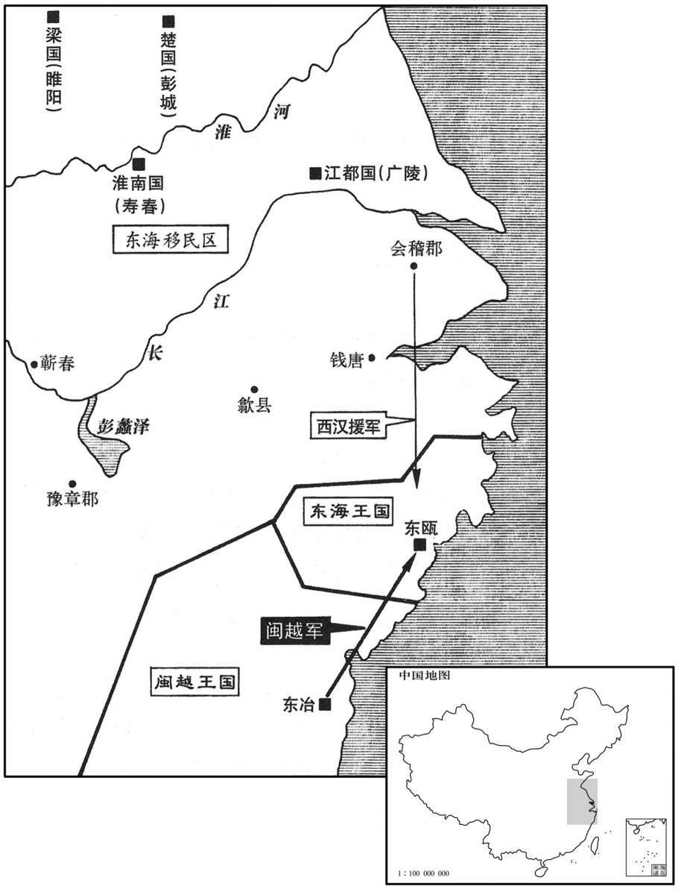
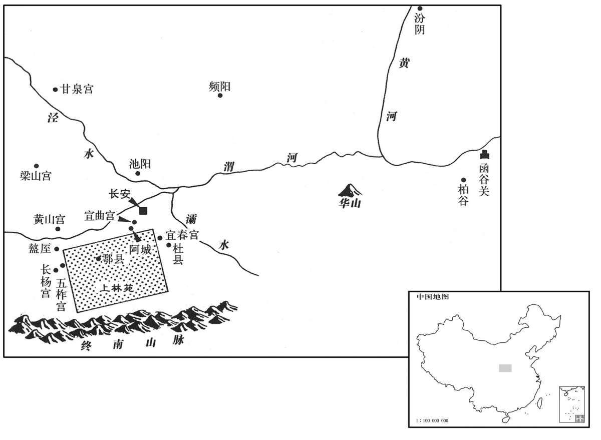
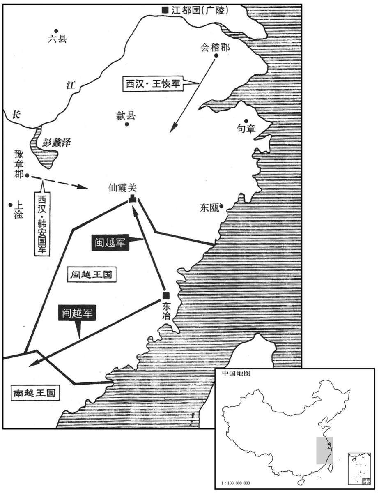

卷次与人物目录 / 卷17
资治通鉴 · 卷第十七【汉纪九】
公元前140年至公元前134年 · 原文、白话与胡三省注
本页按胡注本编排保存全卷内容。白话采用本站所据译本，未可靠对应的内容另列说明；事件标题用于定位，并非原书文字。
本卷共72段原文，72段有译文对应，0段缺译或待核对。
卷第十七【汉纪九】起重光赤奋若（辛丑），尽强圉协洽（丁未），凡七年。
卷首原文与注释
世宗孝武皇帝上之上〔荀悦曰：讳“彻”之字曰“通”。景帝中子也。应劭曰：礼谥法：威强睿德曰武。〕
公元前140年 · 汉世宗孝武皇帝建元元年
建元元年〔（辛丑、前一四○）自古帝王未有年号，始起于此。贡父曰：封禅书云：“其后三年，有司言：『元宜以天瑞命，不宜以一二数推。』”所谓“其后三年”者，盖尽元狩六年至元鼎三年也。然元鼎四年方得宝鼎，又无缘先三年称之。以此而言，自元鼎以前之年，皆有司所追命；其实年号之起在元鼎，故元封改元则始有诏书也。〕
本年事件索引（现代整理）
冬，十月，诏举贤良方正直言极谏之士，上亲策问以古今治道，对者百余人。广川董仲舒对曰：“道者，所繇适于治之路也，〔师古曰：繇，从也。适，往也。治，直吏翻。繇，古由字。〕仁、义、礼、乐，皆其具也。故圣王已没，而子孙长久，安宁数百岁，此皆礼乐教化之功也。夫人君莫不欲安存，而政乱国危者甚众；所任者非其人而所繇者非其道，是以政日以仆灭也。夫周道衰于幽、厉，非道亡也，幽、厉不繇也。至于宣王，思昔先王之德，兴滞补敝，明文、武之功业，周道粲然复兴，〔复，扶又翻。〕此夙夜不懈行善之所致也。
冬季，十月，汉武帝下诏，令大臣举荐贤良方正直言极谏的人才，武帝亲自出题，围绕着古往今来治理天下的“道”，进行考试。参加考试的有一百多人。广川人董仲舒在回答说：“所谓的‘道’，是指由此而达到天下大治的道路，仁、义、礼、乐都是推行‘道’的具体方法。所以，古代圣明的君王去世之后，他的后代可以长期稳坐天下，国家几百年太平无事，这都是推行礼乐教化的功绩。凡是君主，没有人不希望自已的国家能安宁长存，但是政治昏乱、国家危亡的却很多。用人不当，治理国家的方法不是正道，所以国家政治一天比一天接近灭亡。周王朝有幽王、厉王时期出现衰败，并不是由于治国的道路不存在了，而是由于幽王、厉王不遵循治国之道。到了周宣王在位时，他仰慕过去先王的德政，恢复被淡忘的先王善政，弥补残缺，发扬周文王、周武王的功业，周代的王道再次焕发出灿烂的光彩，这是日夜不懈地推行善政而取得的成效。
孔子曰：『人能弘道，非道弘人。』〔师古曰：论语载孔子之言也。言明智之人则能行道；内无其质，非道所化。〕故治乱废兴在于己，非天降命，不可得反；其所操持誖谬，失其统也。〔操，千高翻；下同。〕为人君者，正心以正朝廷，正朝廷以正百官，正百官以正万民，正万民以正四方。四方正，远近莫敢不壹于正，而亡有邪气奸其间者，〔奸，音干，犯也。〕是以阴阳调而风雨时，群生和而万民殖，诸福之物，可致之祥，莫不毕至，而王道终矣！
“孔子说：‘人可以发扬光大道，而不是道弘扬人。’所以， 国家的治乱兴亡在于君主自己，只要不是天意要改朝换代，统治权就不会丧失；君主的作为悖理错误，就会丧失统治地位。做君主的人，要端正自己的思想，整肃朝廷，整肃了朝廷才能用以整肃百官，整肃了百官才能用以整肃天下百姓，整肃了天下百姓才能用以整肃四方的夷狄各族。四方的夷狄各族都已整肃完毕，远近没有胆敢不统一于正道的，就没有邪气冲犯天地之间，因此阴阳谐和，风调雨顺，生物安和相处，百姓繁衍生息，所有象征辛福的东西和可以招致吉祥事，全都出现，这就是王道的最佳境界了！
孔子曰：『凤鸟不至，河不出图，吾已矣夫！』〔论语载孔子之言。〕自悲可致此物，而身卑贱不得致也。〔师古曰：凤鸟、河图，皆王者之瑞；仲尼自叹有德无位，故不至也。〕今陛下贵为天下，富有四海，居得致之位，操可致之势，又有能致之资；行高而恩厚，知明而意美，爱民而好士，可谓谊主矣。〔行，下孟翻。知，读曰智。好，呼到翻。〕然而天地未应而美祥莫至者，何也？凡以教化不立而万民不正也。夫万民之从利也，如水之走下，〔走，音奏。〕不以教化堤防之，不能止也。古之王者明于此，故南面而治天下，〔治，直之翻。〕莫不以教化为大务。立太学以教于国，设庠序以化于邑，〔学记曰：古之教者，家有塾，党有庠，遂有序，国有学也。〕渐民以仁，摩民以谊，〔渐，音沾，谓浸润之也。摩，谓砥厉之也。〕节民以礼，故其刑罚甚轻而禁不犯者，教化行而习俗美也。圣王之继乱世也，扫除其迹而悉去之，〔去，羌吕翻。〕复修教化而崇起之；〔复，扶又翻。〕教化已明，习俗已成，子孙循之，〔师古曰：循，顺也；顺而行之。〕行五六百岁尚未败也。秦灭先圣之道，为苟且之治，故立十四年而亡，〔自始皇初并天下数之，至亡十四年。〕其遗毒余烈至今未灭，使习俗薄恶，人民嚚顽，抵冒殊捍，熟烂如此之甚者也。〔文颖曰：捍，突也。师古曰：口不道忠信之言为嚚，心不则德义之经为顽。抵，触也。冒，犯也。殊，绝也。捍，拒也。嚚，鱼巾翻。冒，如字，又莫克翻。〕窃譬之：琴瑟不调，甚者必解而更张之，乃可鼓也；为政而不行，甚者必变而更化之，乃可理也。故汉得天下以来，常欲治而至今不可善治者，失之于当更化而不更化也。〔更，工衡翻。〕
“孔子说：‘凤凰不来，黄河也不出现图画，我算完了！ ’他认为自己的德行本可招致这些祥瑞，但因为身分卑贱不能招致，而感到悲哀。现在，陛下贵为天子，富有四海，身居得以招致祥端的尊位，手持可以招致祥瑞的权势，又有能够招致祥瑞的资质；品行高尚而恩德深厚，头脑聪明而心地善良，爱护百姓而尊重贤士，可称得上是仁义君主了。但是，天地没有相应的表示，祥瑞没有出现，原因何在？主要在于没有推行道德教化，百姓没有走上正路。百姓追逐财利，就如同水流向低处一样，不用教化筑成堤，就不能阻止。古代英明的君主深知此理，所以面南为王治理天下时，没有不把教化作为根本大事的。建立太学，以便在都城兴起教化，兴办学府，以便在地方城邑中开导民众，当时的刑罚很轻而没有人触犯法禁，其原因在于推行了教化而社会风俗很好。圣明的君主继承乱世道，首先要把它的一切残余全部扫除，还要推行教化，提高教化；教化已见明效，好的社会风俗已经形成，子孙后代沿袭不变，实行五六百年也不会衰败。秦朝毁弃先代圣王的治国之道，实行不顾长远、只顾眼前的统治方法，所以立国仅有十四年就灭亡了。秦遗留下来的恶劣影响至今还没有清除，导致社会风俗浅薄恶劣，百姓不讲忠信德义，抵触冒犯，殊死反抗，风俗竟然败坏到如此程度。我私下做了这样一个比喻：琴瑟声音不和谐，严重时必须解下旧弦，更换新弦，才可以弹奏；实施统治遇到了阻碍，严重时一定要加以改变，才能治理好国家。所以，自从汉朝得到天下以来，一直想治理好国家，但至今没有治理得好，其原因就在于应当实行改革的时候而没有实行改革。
臣闻圣王之治天下也，〔自此以下，系第二策。〕少则习之学，长则材诸位，〔谓授之位以试其材。少，诗沼翻。长，知两翻。〕爵禄以养其德，刑罚以威其恶，故民晓于礼谊而耻犯其上。武王行大谊，平残贼，周公作礼乐以文之；至于成、康之隆，囹圄空虚四十余年：〔尔雅〔刘熙〕释名：囹，领也；圄，御也；领录囚徒禁御也。礼记正义：崇精问曰：“狱，周曰圜土，殷曰羑里，夏曰均台；囹圄，何代之狱？”焦氏答曰：“月令，秦书，则狱名也，汉曰若卢，魏曰司空是也。”〕此亦教化之渐而仁谊之流，非独伤肌肤之效也。〔渐，子廉翻。〕至秦则不然。师申、商之法，〔申不害、商鞅也。〕行韩非之说，憎帝王之道，以贪狼为俗，〔师古曰：狼性皆贪，故谓贪者为贪狼也。〕诛名而不察实，〔师古曰：诛，责也。〕为善者不必免而犯恶者未必刑也。是以百官皆饰虚辞而不顾实，外有事君之礼，内有背上之心，造伪饰诈，趋利无耻；〔背，蒲妹翻。趋，七喻翻。〕是以刑者甚众，死者相望，而奸不息，俗化使然也。今陛下并有天下，莫不率服，而功不加于百姓者，殆王心未加焉。曾子曰：『尊其所闻，则高明矣；行其所知，则光大矣。高明光大，不在于他，在乎加之意而已。』〔师古曰：曾子之书也。曾子，曾参。〕愿陛下因用所闻，设诚于内而致行之，则三王何异哉！
“我听说圣明的君主治理天下，臣子年幼时就学习知识， 成年后就给他官位以磨砺他的才能，颁给爵位俸禄以培养他的品德，实施刑罚以威慑他的罪恶念头，所以，百姓才能通晓礼义，而以冲犯君主为耻。周武王奉行天下大义，推翻了独夫民贼，周公制作了礼和乐来修饰周政；到了成王、康王的大治时期，没有人犯罪，监狱空虚长达四十多年。这也是教化的浸润和仁义的流布，而不止是伤残皮肉的刑罚的成效。到秦代就不是这样了。秦尊奉申不害、商鞅的法
令，实行韩非的学说，憎恶圣明帝王的治世之道，提倡贪求财利的风俗，只看虚名而不注重实际，做好事的人不一定能辛免受刑罚，而做坏事的人也不一定能受到惩罚。因此，百官都粉饰虚名假誉而不注重实际政务，表面上有侍奉君主的礼仪，内心却有背叛君主的念头，弄虚作假，追逐财利，毫无廉耻；所以遭受刑罚的人很多，死人相连，但是犯罪却没被制止，是风俗的影响造成了这样的状况。现在陛下统治全国，天下没有不服从的，但是却没有给百姓带来功德，大概是由于您没有注意到这个问题吧。《曾子》一书说：‘尊重所听到的道理，他就算是高明了；实践所知道的的知识，他就算是光大了。高明光大，不在于别的，就在于认真注意罢了。’希望陛下能依据所听到的道理，真诚地信奉它并把它推行开来，那么，您与圣明的三王就没有什么不同了！
夫不素养士而欲求贤，譬犹不琢玉而求文采也。故养士之大者，莫大呼太学；太学者，贤士之所关也，〔师古曰：关，由也。〕教化之本原也。今以一郡、一国之众对，亡应书者，〔师古曰：书，谓举贤良文学之诏书。亡，古无字通；下同。〕是王道往往而绝也。臣愿陛下兴太学，置明师，以养天下之士，数考问以尽其材，〔数，所角翻。〕则英俊宜可得矣。今之郡守、县令、民之师帅，所使承流而宣化也；故师帅不贤，则主德不宣，恩泽不流。〔帅，所类翻。〕今吏既亡教训于下，或不承用主上之法，暴虐百姓，与奸为市，〔师古曰：言小吏有为奸欺者，守令不举，乃反与交易求利也。〕贫穷孤弱，冤苦失职，甚不称陛下之意；是以阴阳错缪，氛气充塞，〔称，尺证翻。塞，悉则翻。〕群生寡遂，黎民未济，皆长吏不明使至于此也！
“平常不招徕和尊重士人，而想求得贤能之臣， 就好像不雕琢玉石而想得到花纹美丽的玉器一样。所以，招徕和尊重士人的方法，莫过于兴建太学；太学，是贤士的来源，是推行教化的根本。现在，让一郡、一国的所有民众都来回答，而没有一个符合诏书要求的人才，这说明上古圣王之道常常灭绝了。臣希望陛下兴建太学，设置学识渊博的老师，用来培养天下的士人，经常考试以便学生能全面表现自己的才能，就可以得到出类拔萃的人杰了。现在的郡守和县令，是百姓的表率，其职责就在于上承仁德而向下传播教化；所以，如果这些表率人物无德无才，就会君主仁德不能传播，恩泽不能流布。现在的官吏都不能教化民众，有的还不遵守朝廷的法度，残酷地虐待百姓，与坏人勾结，贪求财利，百姓贫困孤弱，冤屈痛苦，无法维持生计，十分不合陛下的心这都是官吏不称职造成的后果！
夫长吏多出于郎中、中郎、吏二千石子弟，选郎吏又以富訾，未必贤也。〔长，知两翻。訾，读曰赀。〕且古所谓功者，以任官称职为差，非谓积日累久也；故小材虽累日，不离于小官，贤材虽未久，不害为辅佐，〔师古曰：害，犹妨也。离，力智翻。〕是以有司竭力尽知，务治其业而以赴功。〔知，读曰智。治，直之翻。〕今则不然。累日以取贵，积久以致官，是以廉耻贸乱，贤不肖浑肴，未得其真。〔贸，音茂。浑，户本翻。〕臣愚以为使诸列侯、郡守、二千石各择其吏民之贤者，岁贡各二人以给宿卫，且以观大臣之能；所贡贤者，有赏，所贡不肖者，有罚。夫如是，诸吏二千石皆尽心于求贤，天下之士可得而官使也。〔授之以官而任使之。〕徧得天下之贤人，则三王之盛易为〔易，以豉翻。〕而尧、舜之名可及也。毋以日月为功，实试贤能为上，量材而授官，录德而定位，〔量，音良。师古曰：录，谓存视也。〕则廉耻殊路，贤不肖异处矣！
“官吏大部分出自郎中，中郎、二千石官员的子弟， 选任郎官又以家庭富于资财为条件，所选的人未必是贤能的人。而且，古代所说的‘功’，是按照任官政绩的好坏来区分大小，并不是指任职的累积时间；所以，本事小的人，即使是任职时间很长，也仍做小官，贤能的栋梁之才，即使是任职时间很短，也不妨做辅政大臣，所以，官吏们都尽心竭力，一心做好本职工作而建功立业。现在就不是这样了。累积时日就可以猎取富贵，任期长久就可以升官晋职，因此，廉洁与耻辱相互转化搀杂，贤能和不肖混淆，不能判明真伪。我认为应让列侯、郡守、二千石官秩的官员，各自从所管理的官吏、百姓中选择贤能的人，每年向朝廷选送二人，到宫中服务，而且可以用这种方法来观察大臣的才能高低；选送的人有贤德，就给以赏赐，选送的人不好，就给以惩罚。如果这样，所有二千石官员都会全力以赴地寻求贤人，天下的人杰都可以成为国家官员而为皇上效力了。把天下的贤人都吸收到朝廷中来，那么，三代圣王的功业不难于造就，而且尧舜的美名也可以企及。不要用任职时间长短计算功劳，而以实际考察出来的贤能为上，根据各人才能大小给以不同的官职，核查品行的高低而确定不同的地位，就会使廉洁和耻辱、贤与不肖区别得很清楚了！
臣闻众少成多，积小致巨，〔自此以下，系第三策。师古曰：巨，大也。〕故圣人莫不以暗致明，〔暗，古暗字。〕以微致显；是以尧发于诸侯，舜兴呼深山，〔师古曰：尧，谓从唐侯升天子之位。孟康曰：舜耘于历山。〕非一日而显也，盖有渐以致之矣。言出于己，不可塞也；行发于身，不可掩也；言行，治之大者，君子之所以动天地也。〔塞，悉则翻。行，下孟翻。〕故尽小者大，慎微者着；〔师古曰：能尽众小，则致高大；能谨于微，则其善着明也。〕积善在身，犹长日加益而人不知也；〔师古曰：长，言身形之修短，自幼及壮也。〕积恶在身，犹火销膏而人不见也；此唐、虞之所以得令名而桀、纣之可为悼惧者也。
“我听说积少成多，积小成大，所以古代的圣人， 没有一个不是由默默无闻而变成美名远扬，由卑徽而达到显赫；因此，尧起步于诸侯之位，舜兴起于深山之中，并不是一日之内突然显赫起来，应该说是逐渐达到的。言语是由自己说出来的，不能阻塞；行为是由自身做出来的，无法掩饰；言语和行为，是治理天下的重要内容，君子正凭借着它而感动天地。所以，能做好一切小事的人，才能成就大业，能注意一切细徽的人，才能功德彰明。本身积累善德，就像人的身体长高时那样，每天都在增长自己却不知道；本身积累恶行，就像灯火消耗灯油一样，自己也没有察觉；这正是唐尧虞舜成就美名和夏桀商纣令人悲悼戎惧的原因。
夫乐而不乱，复而不厌者，谓之道。〔乐，音洛。师古曰：复，谓反复行之也，音扶目翻。〕道者，万世亡敝；敝者，道之失也。〔师古曰：言有敝非道，由失道故有敝。亡，古无字通；下同。〕先王之道，必有偏而不起之处，故政有眊而不行，〔眊，莫报翻，不明也。〕举其偏者以补其敝而已矣。三王之道，所祖不同，非其相反，将以捄溢扶衰，所遭之变然也。〔捄，与救同。〕故孔子曰：『无为而治者其舜乎！』改正朔，易服色，以顺天命而已；其余尽循尧道，何更为哉！〔更，工衡翻。〕故王者有改制之名，亡变道之实。然夏尚忠，殷尚敬，周尚文者，所继之捄当用此也。〔师古曰：继，谓所受先代之次也。捄，谓救其敝也。〕孔子曰：『殷因于夏礼，所损益可知也；周因于殷礼，所损益可知也；其或继周者，虽百世可知也。』〔师古曰：论语载孔子之言。谓忠敬与文因循为教，立政垂则，不远此也。〕此言百王之用，以此三者矣。夏因于虞，而独不言所损益者，其道一而所上同也。道之大原出于天，天不变，道亦不变；是以禹继舜，舜继尧，三圣相受而守一道，亡捄敝之政也，〔师古曰：言政和平，不须救弊也。〕故不言其所损益也。繇是观之，继治世者其道同，继乱世者其道变。
“快乐而不淫乱，反复行善而不厌倦，这就是‘道’。遵循道行事， 万世无弊害；只要有弊害产生，一定是因为没有按照道行事。一定是因为执行先王之道有所偏废，所以政治昏乱政令不行，补救的方法，就是运用王道中被偏废的部分去补救积弊罢崐了。三代圣王的治国之道，侧重点各有不同，并不是它们相互矛盾，它们都是为了医治社会积弊，只是由于各自面对的社会情况不同，才形成了治国之道的不同。所以孔子说：‘要说无为而治的人，应该是舜吧！’舜改换历法，改变衣服颜色，只是顺应天意罢了。其余一切都遵循尧的治国之道，哪里改变过什么呢！所以，圣明的君主，有改变制度的名义，而没有改变治道的实际内容。然而，夏代推崇忠直，商代推崇恭敬，周代推崇礼仪，形成这种不同的原因，是因为它们要各自拯救前朝的缺失，必须使用各自不同的方法。孔子说：‘商代继承了夏代的制度，所废除的和增加的是可以知道的；周代继承了商代的制度，所废除的和增加的是可以知道的；若有
人继承周代，就是过了一百代之后所实行的制度，也可以推测得出来。’这是说百代君主所用的治国之道，也就是使用夏商周这三种了。夏代是继承了有虞氏的制度，而孔子唯独没有说到两者之间的增减，是因为两者的治国之道一致，而且所推崇的原则相同。道之所以精深博大，是因为它来源于天，只要天不变，道也就不会变；所以，夏禹继承虞舜，虞舜继承唐尧，三位圣王相互授受禅让天下，而遵循相同的治道，是因为其间不需要补救积弊，所以孔子不说他们之间的增减。由此看来，继承一个大治的朝代，继起者实行与原来相同的治国之道；继承一个政治昏乱的朝代，继起者一定要改变治国之道。
今汉继大乱之后，若宜少损周之文致，〔师古曰：致，至极也。贡父曰：致，当属下句。少，诗沼翻。〕用夏之忠者。夫古之天下，亦今之天下，共是天下，以古准今，壹何不相逮之远也！安所缪盭而陵夷若是？〔盭，古戾字。师古曰：安，焉也。〕意者有所失于古之道与，有所诡于天之理与？〔诡，违也，异也。与，与欤同。〕
“现在汉朝是在大乱之后而建国的， 似乎应该略为改变周代制度的过分强调礼仪，而提倡夏代的忠直之道。古代的天下，也就是现在的天下，同是这一个天下，为什么古代与现在相比，却会有那么大的差距！为什么败坏到如此程度？估计或许是因为没有遵循古代的治国之道吧，或许是因为违背了天理吧？
夫天亦有所分予：予之齿者去其角，傅其翼者两其足，〔师古曰：谓牛无上齿则有角，其余无角者则有上齿。傅，着也；言鸟不四足。分，扶问翻。予，读曰与。去，羌吕翻。傅，读曰附。〕是所受大者不得取小也。古之所予禄者，不食于力，不动于末，〔师古曰：末，谓工商之业。〕是亦受大者不得取小，与天同意者也。夫已受大，又取小，天不能足，而况人呼！此民之所以嚣嚣苦不足也。〔嚣，音敖；嚣嚣，众怨秋声也。〕身宠而载高位，〔载，乘也。〕家温而食厚禄，因乘富贵之资力以与民争利于下，民安能如之哉！民日削月脧，〔孟康曰：脧，音揎，谓转踧也。苏林曰：脧，音镌石；俗语谓朒为脧缩。师古曰：孟说是也。揎，音宣。踧，音子六翻。〕寖以大穷。富者奢侈羡溢，〔羡，饶也，读与衍同，读与衍同，音弋战翻。〕贫者穷急愁苦；民不乐生，安能避罪！此刑罚之所以蕃〔乐，音洛。师古曰：蕃，多也，音扶元翻。〕而奸邪不可胜者也。天子大夫者，下民之所视效，远方之所四面而内望也；近者视而放之，〔师古曰：放，依也，音甫往翻。〕远者望而效之，岂可以居贤人之位而为庶人行哉！〔行，下孟翻；下同。〕夫皇皇求财利，常恐乏匮者，庶人之意也；皇皇求仁义，常恐不能化民者，大夫之意也。〔皇皇，急速也。〕易曰：『负且乘，致寇至。』〔此易解卦六三之辞也。〕乘车者，君子之位也；负担者，小人之事也；此言居君子之位而为庶人之行者，患祸必至也。若居君子之位，当君子之行，则舍公仪休之相鲁，无可为者矣。〔公仪休相鲁，之其家，见织帛，怒而出。其妻食于舍而茹葵，愠而拔其葵。曰：“吾已食禄，而夺园夫、红女利乎！”舍，读曰舍。言为君子者当如公仪休；若废而不遵，则无可为者矣。〕
“天对万物也有一定的分配赐予：赐给利齿的动物不让它再长犄角， 赐给双翅的鸟类只让它有两只脚，这是让已受大利的，不能再取得小利。古代那些接受俸禄的官员，不许靠气力谋食，不得经营工商末业，这也是既得大利就不能再取小利，与天的旨音是相同的。那些已得大利又要夺取小利的人，连天
都不能满足其贪欲，更何况人呢！这正是百姓纷纷怨叹困苦不足的原因。那些达官显贵，身受朝廷荣宠而居高位，家庭富裕又享受丰厚俸禄，于是凭借着既富又贵的资本和权势，在下面与平民百姓去争利，百姓比得上他们啊！百姓逐日逐月地被削弱，最后陷入穷困。富袷的人奢侈成风挥金若土，穷困的人走投无路苦不聊生；百姓没有感觉到活着有什么乐趣，怎么能避免犯罪呢！这正是刑罚繁多却不能制止犯罪的原因。天子的官员，是平民百姓观察仿效的对象，是远方各民族从四面八方向中央观察仿效的对象；远近的人都观察和仿效他们，怎么可以身居贤人的高位却去做平民百姓所做的事呢！急急忙忙地追求财利，经常害怕穷困，这是平民百姓的心理状态；急急忙忙地追求仁义，经常害怕不能用仁义去感化百姓，这是官员应有的意境。《易经》说：‘既背负着东西又乘车，招来了强盗抢劫。’乘坐车辆，这是君子的位置；身背肩担，这是小人的事；《易经》的这句话，是说居于君子尊位而去做平民百姓的事，这样的人，一定会招来祸患。辅政的方法之外，就没有别的方法了。
春秋大一统者，天地之常经，古今之通谊也。〔师古曰：一统者，万物之统皆归于一也。春秋公羊传：“隐公元年，春王正月。何言乎王正月？大一统也。”此言诸侯皆系统天子，不得自专也。〕今师异道，人异论，百家殊方，指意不同，是以上无以持一统，法制数变，下不知所守。〔数，所角翻。〕臣愚以为诸不在六艺之科、孔子之术者，皆绝其道，勿使并进，邪辟之说灭息，〔辟，读曰僻。〕然后统纪可一而法度可明，民知所从矣！”
“《春秋》推崇的天下一统，这是天地之间的永久原则， 是古往今来的一致道义。现在，每个经师传授的道不同，每个人的论点各异，百家学说旨趣不同，因此，君主没有办法实现统一，法令制度多次变化，臣下不知应该遵守什么。我认为，方向不同，所有不属于儒家‘六艺’范围之内，不符合孔子学说的学派，都禁绝其理论，不许它们与儒学并进，使邪恶不正的学说归于灭绝，这样做了就能政令统一，法度明确，臣民就知道该遵循什么了！”
天子善其对，以仲舒为江都相。会稽庄助亦以贤良对策，天子擢为中
天子善其对，以仲舒为江都相。会稽庄助亦以贤良对策，〔汉书作“严助”，盖明帝讳庄，避之也。会，工外翻。〕天子擢为中大夫。〔按考异曰：汉书武纪：“元光元年五月，诏举贤良，董仲舒、公孙弘出焉。”仲舒传曰：“仲舒对册，推明孔氏，抑黜百家。立学校之官，州县举茂才、孝廉，皆自仲舒发之。”今举孝廉在元光元年十一月，若对策在下五月，则不得云自仲舒发之，盖武纪误也。然仲舒对策，不知果在何时；元光元年以前，唯今年举贤良见于纪。三年，闽越、东瓯相攻，庄助已为中大夫，故皆着之于此。仲舒传又云：“辽东高庙、长陵高园灾。仲舒推说其意；主父偃窃其书奏之，仲舒由是得罪。”按二灾在建元六年，主父偃传，上书召见在元光元年。盖仲舒追述二灾而作书，或作书不上，而偃后来方见其草藁也。〕丞相卫绾奏：“所举贤良，或治申、韩、苏、张之言乱国政者，请皆罢。”奏可。董仲舒少治春秋，〔治，直之翻。少，诗照翻。〕孝景时为博士，进退容止，非礼不行，学者皆师尊之。及为江都相，事易王。〔江都易王非，景帝子，帝之兄也。谥法：好更故旧曰易；音亦。〕易王，帝兄，素骄，好勇。〔好，呼到翻；下同。〕仲舒以礼匡正，王敬重焉。
两版字句有差异，建议核对原文。
武帝很赞赏董仲舒的对答，任命他做江都国的相。 会稽人庄助也以贤良的身分参加了考试对答，武帝擢拔他担任中大夫。丞相卫绾向武帝上奏：“举荐来的贤良，有研究申不害、韩非、苏秦、张仪的学说，扰乱国家政治的，请都予以遣返。”武帝批准了奏请。董仲舒从小研究《春秋》。孝景帝时做了博士官，进退举止，不做任何不合乎礼法的事，学者们都用尊师的礼节尊敬他。等到董仲舒做了江都国的相，侍奉江都易王刘非。易王刘非，是武帝的哥哥，历来骄横，好逞勇力。董仲舒用礼义来辅佐纠正他，易王也很敬重董促舒。
春，二月，赦。
春季，二月，汉武帝颁布赦令。
行三铢钱。〔师古曰：新坏四铢钱，造此钱也，重如其文。〕
朝廷发行三铢钱。
夏，六月，丞相卫绾免。丙寅，以魏其侯窦婴为丞相，武安侯田蚡为太尉。上雅向儒术，婴、蚡俱好儒，推毂代赵绾为御史大夫，兰陵王臧为郎中令。〔谓荐进贤者，若推车毂然，主于进也。推，吐雷翻。毂，古禄翻。班志，代县属代郡；兰陵县属东海郡。〕绾请立明堂以朝诸侯，〔王者之堂，所以正四时，出教化；自秦灭先王之礼，其制不存。朝，直遥翻；下同。〕且荐其师申公。秋，天子使使束帛加璧、安车驷马以迎申公。〔古者，高车立乘，安车坐乘。据申公传，安车以蒲裹轮。孔颖达曰：安车，若今小车者。古者乘四马之车，立乘；既老，故乘一马小车，坐乘也。余按孔氏所谓小车，乃古之大夫致事者适四方所乘私车也；今加礼申公，迎以驷马安车，非小车也。〕既至，见天子。天子问治乱之事，申公年八十余，对曰：“为治者不至多言，顾力行何如！”〔治，直吏翻。〕是时，天子方好文词，见申公对，默然；然已招致，则以为太中大夫，舍鲁邸，议明堂、巡狩、改历、服色事。〔汉制：郡国皆立邸于京师。申公，鲁人，故舍鲁邸。〕
夏季，六月，丞相卫绾被免职，丙寅（初七），武帝任命魏其侯窦婴做丞相，任命武安侯田做太尉。武帝一向看重儒求，窦婴、田都喜好儒求，极力推荐代地人赵绾担任御史大夫，推荐兰陵人王臧担任郎中令。赵绾奏请兴建明堂以接受诸侯王的朝见，并且向武帝推荐了他的老师申公。秋季，武帝派出使者带着表示礼聘的帛和玉璧，驾着安车驷马去迎接申公入朝。申公到了京城，拜见武帝。武帝询问关于国家治乱
的事，申公已是八十多岁的高龄，回答说：“治理天下的人，不以说得多为完善，只看努力实干得怎样罢了。”这时，武帝正喜爱文辞，看到申公的对答，沉默不语；武帝虽然对申公的对答不满意，但既然已把他招来了，就任命他做了太中大夫，安顿他住大鲁王在京城的官邸中，商议有关兴建明堂、天子视察各地、改换历法和服色等事情。
是岁，内史宁成抵罪髡钳。
这一年，内史宁成犯罪，被判处髡钳刑。
公元前139年 · 汉世宗孝武皇帝建元二年
建元二年〔（壬寅、前一三九）〕
本年事件索引（现代整理）
冬，十月，淮南王安来朝。上以安属为诸父而材高，甚尊重之，〔安，淮南王长之子。长于文帝为弟，安于景帝为从弟，于帝为诸父行。〕每宴见谈语，昏暮然后罢。〔见，贤遍翻。〕
冬季，十月，淮南王刘安来朝见武帝。武帝因为刘安从辈份说是叔父，而且有很高的才能，很尊重他，每当安闲无事时，召他来交谈，总到黄昏后才停止。
安雅善武安侯田蚡，〔雅，素也。〕其入朝，武安侯迎之霸上，与语曰：“上无太子，王亲高皇帝孙，行仁义，天下莫不闻。宫车一日晏驾，非王尚谁立者！”安大喜，厚遗蚡金钱财物。〔遗，于季翻。〕
刘安一直与武安侯田友好，他来京朝见时，武安侯到霸上迎接他，告诉他说：“皇上没有太子，大王是高皇帝的亲孙子，广行仁义，天下人没有不知道的。假若皇帝突然去世，除了大王之外还有谁能继承帝位呢！”刘安闻言大喜，赠送给田丰厚的金钱财物。
太皇窦太后好黄、老言，不悦儒术。赵绾请毋奏事东宫。〔汉长乐宫在东，太后居之，故谓之东宫，亦谓之东朝。〕窦太后大怒曰：“此欲复为新垣平邪！”〔事见十五卷文帝十六年。复，扶又翻。〕阴求得赵绾、王臧奸利事，以让上；上因废明堂事，诸所兴为皆废。下绾、臧吏，皆自杀；〔下，遐嫁翻。〕丞相婴、太尉蚡免，申公亦以疾免归。
太皇窦太后喜好黄老学说，不喜欢儒家学说。赵绾奏请， 国家政务不要再向太后奏报，窦太后勃然大怒说：“他想做第二个新垣平吧！”窦太后暗中搜集到赵绾、王臧贪赃的证据，以此责备景帝用人不当；景帝就废止了兴建明堂的事，赵绾等人主张的一切都被废止。赵绾、王臧被交付官吏处置，他们都自杀了。丞相窦婴、太尉田被免职，申公也以有病为借口，被免职归家。
初，景帝以太子傅石奋及四子皆二千石，乃集其门，号奋为“万石君”。〔石姓，卫大夫石碏之后。师古曰：集，合也，凡最计也。总合其一门之计，五人为二千石，故号万石君。〕万石君无文学，而恭谨无与比。子孙为小吏，来归谒，万石君必朝服见之，不名。〔朝，直遥翻。〕子孙有过失，不责让，为便坐，〔师古曰：便坐，于便侧之处，非正室也。坐，徂卧翻。〕对案不食；然后诸子相责，因长老肉袒谢罪，改之，乃许。子孙胜冠者在侧，〔胜，音升。〕虽燕居必冠。其执丧，哀戚甚悼。子孙遵教，皆以孝谨闻乎郡国。〔闻，音问。〕及赵绾、王臧以文学获罪，窦太后以为儒者文多质少；〔少，诗沼翻。〕今万石君家不言而躬行，乃以其长子建为郎中令，少子庆为内史。建在上侧，事有可言，屏人恣言极切，至廷见，如不能言者；〔谓事有当谏正者。廷见，谓于百官正朝毕集之时。屏，必逞翻。见，贤遍翻。〕上以是亲之。庆尝为太仆，御出，〔为上御车而出。考异曰：按百官公卿表，庆不为太仆，盖尝摄职也。〕上问车中几马，庆以策数马毕，举手曰：“六马。”庆于诸子中最为简易矣。〔易，以豉翻。〕
当初，汉景帝因为太子太傅石奋及其四个儿子，都有二千石的官秩， 就总计他一门父子五人的官秩之和，称石奋为“万石君”。万石君没有文才学问，但恭敬谨慎却没有人可以与他相比。子孙做小官，回来看望他，万石君必定身穿朝服以礼相见，不叫他们的名字。子孙有了过错，他不加以责备，而为此离开正室坐到厢屋中，对着桌子不吃饭；然后，儿子们互相批评，有过失的人通过长辈人来求情，并且袒露上身前来请罪，表示一定要改正，石奋才答应他的要求而进餐。已经成年的子孙在身边，石奋即使闲居无事，也必定衣冠整齐。他主持丧事，表情极为悲痛。子孙遵循他的教导，都以孝顺谨慎闻名于各地。等到赵绾、王臧因有文采学问却犯了罪，窦太后就认为儒生富于文采却欠缺质朴，现在万石君一家人不多说话却能身体力行，就任命他的大儿子石建担任郎中令，任命他的小儿子石庆担任内史。石建在武帝身边任职，发现了应该进谏的事，让人回避之后，他对武帝畅所欲言，十分尖锐。到了朝廷上与百官朝见武帝时，石建却像一个不善言谈的人。武帝因此很亲近他。石庆曾担任太仆，为武帝驾车外出，武帝问有几匹马拉车，石庆举起马鞭一一点数马匹后，举起手来回答：“有六匹马。”石庆在石奋的儿子中是最为随便的，做事还如此恭敬谨慎。
窦婴、田蚡既免，以侯家居。蚡虽不任职，以王太后故亲幸，数言事多效；〔谓言事多见听用。数，所角翻。〕士吏趋势利者，〔趋，七喻翻。〕皆去婴而归蚡，蚡日益横。〔为婴、蚡交愬张本。横，户孟翻。〕
窦婴、田被罢免之后，以列侯的身份闲住在家中。 田虽然不担任官职，但因有与王太后是同母弟的关系，仍得到皇帝的亲近宠幸，多次议论国事大多被采纳；趋炎附势的士人和官吏，都离开了窦婴而归附田，田一天比一天地骄横起来。
春，二月，丙戌朔，日有食之。
春季，二月，丙戌朔（初一），出现日食。
三月，乙未，以太常柏至侯许昌为丞相。〔昌，高祖功臣许盎之孙。柏至，地阙。〕
三月，乙未（初四），武帝任命太常柏至侯许昌担任丞相。
初，堂邑侯陈午尚帝姑馆陶公主嫖，帝之为太子，公主有力焉；〔班志，堂邑县属临淮郡。陈午，高祖功臣陈婴之孙。馆陶县属魏郡。公主援上为太子，事见上卷景帝前七年。〕以其女为太子妃，及即位，妃为皇后。窦太主恃功，求请无厌，〔厌，于盐翻。〕上患之。皇后骄妬，擅宠而无子，与医钱凡九千万，欲以求子，然卒无之；〔卒，子恤翻。〕后宠浸衰。皇太后谓上曰：“汝新即位，大臣未服，先为明堂，太皇太后已怒；今又忤长主，〔忤，五故翻。长，知两翻。〕必重得罪。〔重，直用翻。〕妇人性易悦耳，〔易，以豉翻。〕宜深慎之！”上乃于长主、皇后复稍加恩礼。〔复，扶又翻。〕
当初，武帝的姑姑馆陶公主刘嫖下嫁给堂邑侯陈午，武帝能得以立为太子，馆陶公主是发挥了很大作用的；公主把她的女儿嫁给太子做正妃，等到武帝即位称帝，妃就做了皇后。窦太主即馆陶公主刘嫖，自恃授立武帝有功，无休无止地请求赏赐、干预国政，武帝对她很不满。陈皇后骄横嫉，独占君宠，却没有生育孩子，给医生的费用合计九千万，想求得生下儿子，但是终究没有生育；对陈皇后的宠爱渐渐衰退。皇太后对武帝说：“你刚刚做上皇帝，大臣还没有归附你，就先兴建明堂，太皇太后已经很恼怒了；现在又得罪窦太主，必定会受到重责。妇人的性情是容易高兴的，你应该慎之又慎！”武帝于是就对窦太主、陈皇后母女俩又稍稍以恩礼相待。
上祓霸上，〔孟康曰：祓，除也；于霸水上自祓除。今之上巳祓禊也。祓，音废，又音拂。〕还，过上姊平阳公主，〔班志，平阳县属河东郡。公主，景帝女，降平阳侯曹寿。〕悦讴者卫子夫。〔师古曰：齐歌曰讴；一侯翻。〕子夫母卫媪，平阳公主家僮也；〔师古曰：僮者，婢妾之总称；媪者，年老之号，非当时所呼也。卫者，举夫家姓。媪，乌浩翻。〕主因奉送子夫入宫，恩宠日隆。陈皇后闻之，恚，几死者数矣；〔恚，于避翻，愠怒也。几，居衣翻。数，所角翻。〕上愈怒。
武帝到霸上举行祓除仪式，返宫途中，去看望他的姐姐平阳公主， 看中了平阳公主府中的歌女卫子夫。卫子夫的母亲卫媪，是平阳公主家的奴婢；平阳公主就把卫子夫送入宫中，卫子夫日益受到武帝的宠幸。陈皇后得知，极为恼怒，好几次几乎给气死；武帝对陈皇后更为恼怒。
子夫同母弟卫青，其父郑季，本平阳县吏，给事侯家，〔师古曰：县遣于侯家供事也。〕与卫媪私通而生青，冒姓卫氏。〔冒姓者，青本郑氏子而冒卫姓也。〕青长，为侯家骑奴。大长公主执囚青，〔大长公主，即馆陶公主也。长，知两翻。骑，奇寄翻；下同。〕欲杀之；其友骑郎公孙敖与壮士篡取之。〔郎之骑从者。郎中有车、户、骑三将。逆取曰篡。〕上闻，乃召青为建章监、侍中，〔建章宫监。据史，太初元年起建章宫，盖因旧宫而大起也。青时为建章监而兼侍中。〕赏赐数日间累千金。既而以子夫为夫人，青为太中大夫。
卫子夫的同母异父弟卫青的父亲郑季，本来是平阳县的县吏， 去平阳侯家中供职当差，和卫媪私通而生了卫青，让他昌充姓卫。卫青长大了，在平阳侯家中当骑奴。大长公主刘嫖抓住卫青囚禁起来，想杀了他；卫青的好友骑郎公孙敖和勇士把他给抢了回来。武帝得知此事，就召见卫青并任命他为建章宫的宫监，还给他侍中的官衔，几天之内给卫青高达上千金的赏赐。不久，武帝立卫子夫为夫人，任命卫青为太中大夫。
夏，四月，有星如日，夜出。
夏季，四月，夜间出现了一颗光亮如同太阳的异星。
初置茂陵邑。〔班志，茂陵邑属扶风。黄图曰：本槐里之茂乡。武帝起陵邑，在长安西北八十里。〕
开始设立茂陵邑。
时大臣议者多冤错之策，〔错事见上卷景帝前三年。〕务摧抑诸侯王，数奏暴其过恶，吹毛求疵，〔谓暴露其过恶。数，所角翻。疵，才斯翻，病也，瑕也。〕笞服其臣，使证其君；诸侯王莫不悲怨。
当时，朝廷大臣的议论中多对晁错提出削藩之策被杀而表示冤枉，一心摧残和抑制诸侯王，经常弹劾揭露诸侯王的过失和罪恶，甚至达到吹毛求疵的程度，用笞刑罚威逼诸侯王的臣子屈服，迫使他们证明诸侯王有过失和罪恶；诸侯王没有一个不为此而悲愁怨恨。
公元前138年 · 汉世宗孝武皇帝建元三年
建元三年〔（癸卯、前一三八）〕
本年事件索引（现代整理）
冬，十月，代王登、长沙王发、中山王胜、济川王明来朝。〔代王登，王参之子，文帝之孙。长沙、中山王，皆景帝子。济川王，梁孝王之子。济，子礼翻。〕上置酒，胜闻乐声而泣。上问其故，对曰：“悲者不可为累欷，思者不可为叹息。〔累，重也。欷，钦欷也，悲思之积于心，闻歔欷叹之声，则其悲思益甚。累，力癸翻。欷，许既翻。〕今臣心结日久，每闻幼眇之声，〔幼，一笑翻。眇，音妙；精微也。〕不知涕泣之横集也。臣得蒙肺附为东藩，属又称兄。〔“肺附”，一作“肺腑”。史记正义曰：颜师古曰：旧解云：肺附，如肝肺之相附着也。一说：肺，碎木札也；喻其轻薄附着大材。按颜此说，并是疏缪；又改“腑”为“附”就其义，重疏缪矣。八十一难云：寸口者，脉之大会；手，太阴之动脉也。吕广云：太阴，肺之脉也；肺为诸藏之主，通阴阳，故十二经脉皆会于太阴，所以决吉凶者。十二经有病，皆于寸口知其何经之动，浮沉濇滑，春秋逆顺，知其死生。顾野王曰：肺腑，腹心也。余谓史若从肺附，则颜说为是；若从肺腑，则依正义。胜王中山，在关东，故曰东藩；以亲属言，则胜于帝，兄也。泣，亦泪也。〕今群臣非有葭莩之亲、鸿毛之重；〔张晏曰：葭，芦叶也；莩，叶里白皮；皆取喻于轻薄也。师古曰：葭，芦也；莩者，其筩中白皮至薄者也。葭莩喻着，鸿毛喻轻薄甚。莩，音孚。〕群居党议，朋友相为，使夫宗室摈却，〔摈却，斥退也。摈，必刃翻。却，丘略翻。〕骨肉冰释，臣窃伤之！”具以吏所侵闻。于是上乃厚诸侯之礼，省有司所奏诸侯事，加亲亲之恩焉。〔省，悉井翻。〕
冬季，十月，代王刘登、长沙王刘发、中山王刘胜、济川王刘明来京朝见武帝。武帝设酒宴款待，刘胜在席间听到音乐声就哭了起来。武帝问他为什么哭，刘胜回答：“悲伤的人听不得抽噎的声音，忧愁的人听不得叹息的声音。现在我心中积压了许多忧伤，每当听到幽妙精微的音乐，不知不觉地就会涕泪横流。我有幸得到朝廷重用，受封为东方的藩臣，从亲属关系说来，又是皇上的哥哥。现在朝廷群臣与皇上之间没有血缘亲情，没有承担国家的任何重任，却结成朋友党发出偏私的议论，相互勾结，使宗室皇族受到打击和排斥，骨肉亲情冰雪般融化，我私下为此而悲伤！”他就把官吏侵夺欺凌诸侯王的事，一一向武帝奏报。于是，武帝就增加诸侯的礼遇，废止了有关官吏检举诸侯王不法行为的文书，对诸侯王施行优侍亲属的恩惠。
河水溢于平原。〔平原本齐地，高祖置郡。禹疏九河，皆在平原、勃海郡界。〕
黄河在平原郡泛滥成灾。
大饥，人相食。
发生了大饥荒，人吃人。
秋，七月，有星孛于西北。〔孛，蒲内翻。〕
秋季，七月，西北天空中出现了一颗异星。
济川王明坐杀中傅，〔济川王明，梁孝王子。应劭曰：中傅，宦者也。汉诸王国有太傅，秩二千石，掌傅王以德义。中傅出入王宫，在王左右，亦主傅教导王。梁王传作“中尉”，此从帝纪。〕废迁房陵。〔班志，房陵县属汉中郡。〕
济川王刘明因杀死中傅而犯罪，被废去王位，流放到房陵县。
七国之败也，〔事见上卷景帝前三年。〕吴王子驹亡走闽越，怨东瓯杀其父，常劝闽越击东瓯。闽粤从之，发兵围东瓯，东瓯使人告急天子。天子问田蚡，蚡对曰：“越人相攻击，固其常；又数反复，〔数，所角翻；下同。〕自秦时弃不属，〔不属，不臣属也。〕不足以烦中国往救也。”庄助曰：〔庄，姓名。战国时，楚有庄周，赵有庄豹。〕“特患力不能救，德不能覆；〔覆，敷又翻。〕诚能，何故弃之！且秦举咸阳而弃之，〔师古曰：举，总也；言总天下乃至京师皆弃之。〕何但越也！今小国以穷困来告急，天子不救，尚安所愬；又何以子万国乎！”上曰：“太尉不足与计。〔考异曰：史记东越、汉书严助传，皆云“建元三年，闽越围东瓯，天子问太尉田蚡。”按是时蚡不为太尉，云太尉，误也。下云“太尉不足与计”，盖追呼其官；或亦误耳。〕吾新即位，不欲出虎符发兵郡国。”乃遣助以节发兵会稽。〔会稽，东南边越。〕会稽守欲距法不为发，〔以法距之，为无汉虎符验。会，工外翻。守，式又翻。为，于伪翻。〕助乃斩一司马，谕意指，〔谓晓喻以天子不欲出虎符之意。〕遂发兵浮海救东瓯。未至，闽越引兵罢。东瓯请举国内徙，乃悉举其众来，处于江、淮之间。〔处，昌吕翻。〕
七国叛乱失败时，吴王的儿子刘驹逃亡到闽越，怨恨东瓯诱杀了他的父亲，经常怂恿闽越进攻东瓯。闽越王听从了刘驹的意见，发兵包围了东瓯都城，东瓯王派人向天子告急求援。武帝征询田的意见，田回答说：“越人相互攻击，本来就是常有的事；又多次叛服不定，从秦朝时就被放弃，不属于中国，不值得烦劳中原朝廷去援救他们。”庄助说：“现在只怕力量小不能前去援救，朝廷德薄不能保护他们；假如能做到这些，为什么要抛弃他们呢！况且，秦朝连整个都城咸阳都抛弃，何止是抛弃了越人呢！现在东瓯这样的小国因走投无路来向朝廷告急，如果陛下不去救援，他们还能去何处求援告急呢；陛下又怎样能使天下万国臣服呢！”武帝说：“太尉的见识，不值得我和他商议国家大事。我刚即位，不想用虎符征发郡国的军队去打仗。”于是派庄助持皇帝的符节去征发会稽郡的军队。会稽郡的郡守本想依据不见虎符不得发兵的法令，不给庄助征发军队，庄助杀了一位司马官，把武帝的意思告知郡守，于是发兵渡海前来援救东瓯。汉军尚未达到，闽越就领兵撤走了。东瓯请求全国人内迁中原归顺朝廷，得到朝廷批准之后，东瓯王领着所有部众迁来，他们被安置在长江和淮河之间。

九月，丙子晦，日有食之。
九月，丙子晦（三十日），出现日食。
上自初即位，招选天下文学材智之士，待以不次之位。〔师古曰：不拘常次，言超擢之。〕四方士多上书言得失，自眩鬻者以千数，〔汉书作“炫”，行卖也。鬻，亦卖也。炫，与眩同，音州县之县，又工县翻。鬻，音育。〕上简拔其俊异者宠用之。庄助最先进；后又得吴人朱买臣、赵人吾丘寿王、〔姓谱：吾，音虞，即虞丘氏。史记有楚相虞丘子。〕蜀人司马相如、平原东方朔、〔风俗通曰：伏羲之后，帝出乎震，主东方，子孙为东方氏。〕吴人枚皋、济南终军等，〔姓谱：枚姓出于周官衔枚氏，其后以官为姓。风俗通：六国有贤人枚被。终姓出于颛顼裔孙陆终。济，子礼翻。〕并在左右，每令与大臣辨论，中外相应以义理之文，大臣数屈焉。然相如特以辞赋得幸；朔、皋不根持论，好诙谐，〔言其议论无所根据。好，呼到翻。诙，古回翻。李奇曰：诙，嘲也。〕上以俳优畜之，〔师古曰：俳，杂戏也；优，调戏也。左传曰：少相狎，长相优。俳优，即今伶人调戏者。〕虽数赏赐，终不任以事也。〔数，所角翻。〕朔亦观上颜色，时时直谏，有所补益。
武帝从刚即位开始，就在招徕选拔博学有才智的人，予以破格重用。天下士人很多人向朝廷上书议论国家政事的得失，自我标榜和自我推荐的人数以千计，武帝从中选拔杰出的人才给以宠信重用。庄助第一个被提拔，以后又招致了吴人朱买臣、赵人吾丘寿王、蜀人司马相如、平原人东方朔、吴人枚皋、济南人终军等，都成了武帝的左右亲信，武帝经常命令他们与朝廷大臣辩论，中朝官与外朝官用义理文辞相互驳难，外朝大臣多次被驳得无法对答。但是，司马相如只是以擅长辞赋写作而得到武帝宠幸；东方朔、枚皋的论点没有根据，喜欢幽默嘲讽，武帝仅把他们视做演戏的艺人收养，虽然经常赏赐财物，终究不把国事朝政委托他们处理。东方朔同样对武帝察颜观色，经常利用时机直言进谏，对朝政发挥了一定补益作用。
是岁，上始为微行，北至池阳，西至黄山，〔班志，池阳县属冯翊。黄山，宫名，在扶风槐里县。〕南猎长杨，东游宜春，〔长杨，宫名。水经注云：槐里县东有漏水，出南山赤谷东北，迳长杨宫；宫有长杨，因名；其地在盩厔界。师古曰：宜春，宫也，在长安东南；说者乃以为在鄠，非也。在鄠者自是宜春观，在长安城西，非东游也。〕与左右能骑射者期诸殿门。〔期门之号始此。〕常以夜出，自称平阳侯；〔平阳侯曹寿尚帝姊，见尊宠，故称之。〕旦明，入南山下，射鹿、豕、狐、兔，〔终南山横互关中南面，西起秦、陇，东彻蓝田，凡雍、岐、郿、鄠、长安、万年相去且八里百，而连绵峙据其南者，皆此一山也。射，而亦翻。〕驰骛禾稼之地，民皆号呼骂詈。〔号，户高翻。〕鄠、杜令欲执之，〔班志，鄠县属扶风。杜县属京兆，宣帝更为杜陵。鄠，音户。〕示以乘舆物，乃得免。〔乘，绳证翻。〕又尝夜至柏谷，〔水经：河水泾湖县故城北，又东合柏谷。水经注云：水出弘农县西石堤山，北迳柏谷亭下，即帝微行处。〕投逆旅宿，就逆旅主人求浆，主人翁曰：“无浆，正有溺耳！”〔溺，奴吊翻。〕且疑上为奸盗，聚少年欲攻之；主人妪睹上状貌而异之，〔妪，威遇翻。〕止其翁曰：“客非常人也；且又有备，不可图也。”翁不听，妪饮翁以酒，醉而缚之。〔饮，于禁翻。〕少年皆散走，妪乃杀鸡为食以谢客。明日，上归，召妪，赐金千斤，拜其夫为羽林郎。〔羽林郎属郎中令。师古曰：羽林，宿卫之官，言如羽之疾，如林之多也。一说曰：羽所以为王者羽翼。〕后乃私置更衣，从宣曲以南十二所，夜投宿长杨、五柞等诸宫。〔师古曰：为休息更衣之处。宣曲，宫名，在昆明池西。五柞，宫名；水经注：宫在盩厔县长杨宫东北。更，工衡翻。柞，昨、作二音。〕
这一年，武帝开始改换装束暗中离宫外出，向北走到池阳县， 向西走到黄山宫，向南到长杨宫打猎，向东去宜春宫游乐。武帝与能骑马射箭的左右亲随相约在殿门前集会，经常在夜时出宫，自称平阳侯；黎明时，到达终南山脚下，射杀鹿、野猪、狐狸、野兔等动物，策马践踏农田庄稼，百姓都大声怒骂。县和杜县的县令想要收捕这批人，这批人拿了天子专用的物品为证，才得以脱身。又有一次，武帝等人曾在夜时到达柏谷，去旅店投宿，向旅店的主人要酒，主人说：“没有酒，只有尿！”而且， 旅店的主人怀疑武帝一行人是强盗，召集了一些青年后生准备收拾他们；店主的妻子见到武帝的体态容貌，觉得不同寻常，就劝阻丈夫说：“来客不是普通人，而且他们已有准备，不能图谋收拾他们。”丈夫不听她的劝告，她就让丈夫喝酒，等他喝醉了之后就把他捆绑起来。召集来的青年后生都走了，店主的妻子就杀鸡做饭招待客人。第二天，武帝返回宫中，召见那位妇人，赏赐千金，任命她的丈夫做羽林郎。后来，武帝就为处出巡游设立了秘密的更衣休息的地方，从宣曲宫向南共设了十二处，夜间投宿在长杨宫、五柞宫等宫殿。
上以道远劳苦，又为百姓所患，乃使太中大夫吾丘寿王举籍阿城以南，盩厔以东，宜春以西，提封顷畮，及其贾直，〔师古曰：举，计其数以为簿籍也。阿城本秦阿房宫，以其墙壁崇广，故俗呼为阿城。盩厔属扶风。山曲曰盩，水曲曰厔。杜佑曰：盩厔，唐为宜寿县。提封，亦谓提举四封之内，总计其大数也。盩，音辀。厔，音窒。贾，读曰价。〕欲除以为上林苑，属之南山。又诏中尉、左右内史〔师古曰：时未为京兆、扶风、冯翊，故云中尉及左、右内史也。予据班表，帝后改右内史为京兆尹，左内史为左冯翊，主爵都尉为右扶风：是为三辅。属，之欲翻。〕表属县草田，〔草田，荒田之未耕垦者。〕欲以偿鄠、杜之民。寿王奏事，上大说称善。〔说，读曰悦。〕时东方朔在傍，进谏曰：“夫南山，天下之阻也。汉兴，去三河之地，〔河南、河内、河东为三河。汉高帝始居洛阳，后西都关中，是去三河之地也。〕止霸、浐以西，都泾、渭之南，此所谓天下陆海之地，〔霸水出蓝田县蓝田谷。浐水亦出蓝田谷，迳蓝田川，北出霸陵，入霸水。霸又北入于渭。泾水注见六卷。渭水出陇西首阳县西南鸟鼠同穴山，东流与霸水、泾水合，又东至船司空入河。陆海，师古曰：高平曰陆；关中地高，故称之耳。海者，万物所出。言关中陆产饶富，是以谓之陆海也。〕秦之所以虏西戎、兼山东者也。其山出玉、石、金、银、铜、铁、良材、百工所取给，万民所昂足也。〔昂，古仰字，通用，音牛向翻。〕又有秔、稻、梨、栗、桑、麻、竹、箭之饶，土宜姜、芋，水多䵷、鱼，〔芋，即蹲鸱也，其叶似藕荷而长，不圆；其根大者为芋魁，其小者附丽甚众，白腻可食。䵷，与蛙同。师古曰：似虾蟆而小，长脚。〕贫者得以人给家足，无饥寒之忧；故酆、镐之间，号为土膏，〔周文王都酆，武王都镐。水经：渭水东过槐里县故城南，东合甘水；又东，丰水从南来注之；又东北与镐水合。班志，丰水出鄠县东南。镐水上承镐池水于昆明池北，皆在上林宛中。〕其贾畮一金。〔贾，与价同。〕今规以为苑，绝陂池水泽之利而取民膏腴之地，上乏国家之用，下夺农桑之业，是其不可一也。盛荆、棘之林，广狐、菟之苑，〔菟，古兔字通用。〕大虎、狼之虚，坏人冢墓，〔虚，读曰墟。坏，音怪。〕发人室庐，令幼弱怀土而思，耆老泣涕而悲，是其不可二也。〔贺玚曰：耆，至也，至老之境也。〕斥而营之，垣而囿之，骑驰东西，车骛南北，〔师古曰：乱驰曰骛。〕有深沟大渠。夫一日之乐，不足以危无堤之舆，〔苏林曰：堤，限也。舆，乘舆也，无限，若言不訾也。不敢斥天子，故曰舆也。张晏曰：一日之乐，谓田猎也；无堤之舆，谓天子富贵无堤限。贡父曰：不足以危，“不”字当作“亦”。堤，亦防也。言车舆驰骋，不为防虑，必有颠蹶之变。乐，音洛。〕是其不可三也。夫殷作九市之宫而诸侯畔，〔应劭曰：纣于宫中设九市。〕灵王起章华之台而楚民散，〔师古曰：楚灵王作章华之台，纳亡人以实之，卒有干溪之祸也。章华台在华容城也。〕秦兴阿房之殿而天下乱。粪土愚臣，逆盛意，罪当万死！”上乃拜朔为太中大夫、给事中，〔百官表：给事中，加官。师古曰：汉官解诂云：掌侍从左右，无员，常侍中。续汉志：给事中，关通内外。盖以给事禁中名官也。〕赐黄金百斤。然遂起上林苑，如寿王所奏。
武帝因为道路遥远身体劳苦，又给百姓带来祸患， 就派太中大夫吾丘寿王把阿城以南、以东、宜春以西这一区域的土地及其价格，统计登记，准备把它修建成上林苑，连接到终南山。武帝又下诏命令中尉、左右内史，上报所属各县的荒田数量，准备给县和杜县的百姓作为补偿。吾丘寿王办理完毕回来报告，武帝很高兴连声称赞。当时，东方朔正在武帝身边，提出批评意见说：“终南山是国家的天然屏障。汉朝建国，离开了三河之地，在霸水、水之西，泾河、渭河之南建立都城，这就是所谓的天下像大海一般富饶的陆上之地，秦王朝凭借着它降服西戎，兼并崤山以东的地区。这一带山中出产玉、石、金、银、铜、铁、优质木材，各种手工业用它们做原料，百姓靠它们维持生活。又盛产、稻、梨、栗、桑、麻、竹箭等物品，土地适宜于种植和芋头，水中有许多青蛙和鱼类，贫穷的人可以人人温饱家家富足，不必担忧受饥寒之苦；所以酆水与镐水之间，号称肥沃之地，每亩土地价值一斤黄金。现在将这片土地划为上林苑，断绝了池沼湖泽的财利来源，夺取了百姓的肥沃土地，对上减少了国家财政费用的来源，对下破坏了农桑生产，这是不应该这样做的第一个理由。荆棘之林得以蔓延，扩大狐狸、野兔、虎、狼的活动范围，破坏百姓的坟墓，拆毁百姓的房屋，使幼童怀恋故土而忧愁，老人痛哭流涕而悲伤，这是不应该这样做的第二个理由。开拓并营建上林苑，周围筑墙以做为禁苑，策马东西奔驰，驱车南北追逐，其中有深沟大河。 为追求一天射猎的乐趣， 不值得尊贵无比的天子去涉险犯难，这是不应该这样做的第三个理由。当年商纣王兴建了内有九市的宫殿导致诸侯背叛，楚灵王筑起章华台而导致楚国百姓四散逃走，秦始皇兴造阿房宫而导致天下大乱。我只是卑贱愚笨的臣仆，竟然冒犯陛下的旨意，真是罪该万死！”武帝就任命东方朔为太中大夫，并授以给事中的官衔，赐给他一百斤黄金以示奖励。但是，武帝仍然按照吾丘寿王所奏报的规模兴建了上林苑。
上又好自击熊、豕，〔说文：熊、似豕，山居，冬蛰，春出。诗疏：熊能攀缘上树，见人则颠倒投地而下。豕，谓野豕也；生一岁为豵，二岁为豜。二兽皆能突人。〕驰逐野兽。司马相如上疏谏曰：“臣闻物有同类而殊能者，故力称乌获，捷言庆忌，勇期贲、育。〔乌获，秦武王力士也。庆忌，吴王僚之子，射能捷矢也。孟贲，古之勇士，水行不避蛟龙，陆行不避豺狼，发怒吐气，声响动天。夏育，亦猛士也。贲，音奔。〕臣之愚，窃以为人诚有之，兽亦宜然。今陛下好陵阻险，射猛兽，卒然遇逸材之兽，骇不存之地，〔师古曰：不存，不可得安存也。贡父曰：不存，犹言不虞，下文云存变之意。射，而亦翻。卒，读曰猝。〕犯属车之清尘，〔属车，注见十三卷。师古曰：属者，言联属不绝也。尘，谓行而起尘也。言清者，尊贵之意也。说者乃以清尘道为清道洒尘，非也。〕舆不及还辕，人不暇施巧，虽有乌获、逄蒙之技〔逄蒙，古之善射者也。孟子曰：逄蒙学射于羿。逄，皮江翻。〕不得用，〔宜承上文为句。〕枯木巧株，尽为难矣。是胡、越起于毂下而羌、夷接轸也，〔轸，后车横木也。〕岂不殆哉！虽万全而无患，然本非天子之所宜近也。〔近，其靳翻。〕且夫清道而后行，中路而驰，犹时有衔橛之变；〔张揖曰：衔，马勒衔也。橛，騑马口长衔也。师古曰：橛，谓车之钩心也。衔橛之变，言马衔或断，钩心或出，则致倾败以伤人也。橛，巨月翻。〕况乎涉丰草，〔丰草，茂草也。〕骋丘墟，前有利兽之乐〔虚，读曰墟。乐，音洛；下同。〕而内无存变之意，其为害也不难矣。夫轻万乘之重不以为安，乐出万有一危之涂以为娱，臣窃为陛下不取。〔为，于伪翻。〕盖明者远见于未萌〔师古曰：萌，谓事始，若草木初生者也。〕而知者避危于无形，〔知，读曰智。〕祸固多藏于隐微而发于人之所忽者也。故鄙谚曰：『家累千金，坐不垂堂。』〔张揖曰：畏櫩瓦堕中人也。师古曰：垂堂者，近堂边外，自恐坠堕耳，非畏櫩瓦也。言富人之子则自爱深矣。〕此言虽小，可以谕大。”上善之。〔考异曰：此多非今年事；因庄助救东瓯及微行始出终言之。〕
武帝又喜欢亲自出击杀熊和野猪，策马追捕野兽。司马相如上疏劝谏说：“我听说，有的东西类型相同而才能不同，所以力量大数得着乌获，行动敏捷要说庆忌，勇猛无敌应归于孟贲和夏育。依我的愚见，人确实有这样的情形，野兽也是这样。现在陛下喜爱攀登险要的地方，射杀猛兽，万一突然遇到力大凶猛的野兽，它在无路可逃的绝境，拼死冒犯陛下的随从车辆，陛下的车辆来不及调转方向，人来不及施展应变的巧计，即便是有乌获、逄蒙的超群技艺，也来不及使用，那么枯树朽木也会成为祸害了。这种情况，相当于胡人和越人突然出现在京城，而羌人和夷人接近了陛下的车辆，怎么能不危险万分呢！即便是万无一失而没有祸害，然而这种环境本来就不是陛下应该接近的啊。更何况陛下入都要在清道戒严之后才出发，车辆要在道路的正中间奔驰，即便如此谨慎，还经常遇到控驭马匹的铁勒折断，或是车轮脱出等意外变故，更何况穿过茂密的荒草，驰过丘陵废墟，前面有即将捕获猎物的诱惑，而心中没有预防意外的准备，野兽要对陛下形成危害恐怕是不可避免的了。看轻皇帝的万乘尊位，不注意自身的安全，反则乐于行进在潜伏着危险的道路上寻求刺激和娱乐，我私下觉得陛下不该如此。大概聪明的人能预见到尚未萌芽的问题，有智慧的人能提前避开还没有完全形成的灾祸，灾祸本来大多隐藏在不易被察觉的细微之处，而发生在容易被人忽略的环节上。所以俗语说：‘家中积累有千金的家产，就不能坐在堂屋的边缘。’这句话虽然说的是小事，却可以比喻大事。”武帝认为他说得很好。

公元前137年 · 汉世宗孝武皇帝建元四年
建元四年〔（甲辰、前一三七）〕
本年事件索引（现代整理）
夏，有风赤如血。
夏季，刮起了一场如同血红色的风。
六月，旱。
六月，出现旱灾。
秋，九月，有星孛于东北。〔孛，蒲内翻。〕
秋季，九月，东北天空出现了异星。
是岁，南越王佗死，〔佗，徒河翻。〕其孙文王胡立。
这一年，南越王赵佗死，他的孙子文王赵胡继承了王号。
公元前136年 · 汉世宗孝武皇帝建元五年
建元五年〔（乙巳、前一三六）〕
本年事件索引（现代整理）
春，罢三铢钱，行半两钱。〔建元元年，行三铢钱，至是而罢，又新铸半两钱。〕
两版字句有差异，建议核对原文。
春季，朝廷宣布停止使用三铢钱，发行半两钱。
置五经博士。
朝廷设立五经博士。
夏，五月，大蝗。
夏季，五月，发生严重的蝗灾。
秋，八月，广川惠王越、清河哀王乘皆薨，无后，国除。〔二王，皆景帝子；越中二年四月受封，乘中三年三月受封，至是国除。〕
秋季，八月，广川惠王刘越、清河哀王刘乘都死去，没有后代，他们的封国被废除。
公元前135年 · 汉世宗孝武皇帝建元六年
建元六年〔（丙午、前一三五）〕
本年事件索引（现代整理）
春，二月，乙未，辽东高庙灾。〔景帝令郡国各立高祖庙，故辽东有高庙。〕
春季，二月，乙未（初三），辽东郡的高祖庙发生火灾。
夏，四月，壬子，高园便殿火；上素服五日。〔师古曰：凡言便殿、便室、便坐者，皆非正大之处，所以就便安也。园者，于陵上作之；既有正寝以象平生，又立便殿为休息闲宴之处耳。便，如字。沈约曰：汉氏诸陵皆有园寝，承秦所为也。说者以为古前庙后寝，以象人主前有朝，后有寝也。庙以藏主，四时祭祀，寝有衣冠、象生之具以荐新。秦始出寝，起于墓侧；汉因不改。及魏武帝葬高陵，有司依汉立陵上祭殿。文帝以为古不墓祭，皆设于庙。高陵上殿屋皆毁坏，车马还廐，衣服藏府。文帝自作终制，又曰：“寿陵无立寝殿，造园邑。”自是至今，陵寝遂绝。〕
夏季，四月，壬子（二十一日），高祖陵寝中的偏殿发生火灾；武帝因此穿戴了五天白色冠服，以示请罪。
五月，丁亥，太皇太后崩。〔孝文皇后窦氏也。〕
五月，丁亥（二十六日），太皇太后驾崩。
六月，癸巳，丞相昌免；〔许昌也。〕武安侯田蚡为丞相。蚡骄侈：治宅甲诸第，田园极膏腴；〔师古曰：甲诸第者，言为诸第之最也。以甲、乙之次言，甲则为上矣。膏腴，谓肥厚之处。治，直之翻。〕市买郡县物，相属于道；多受四方赂遗；其家金玉、妇女、狗马、声乐、玩好，不可胜数。〔属，之欲翻。遗，于季翻。好，呼到翻。胜，音升。〕每入奏事，坐语移日，所言皆听；荐人或起家至二千石，权移主上。上乃曰：“君除吏已尽未？吾亦欲除吏。”尝请考工地益宅，〔考工，少府之属官也，主作器械。〕上怒曰：“君何不遂取武库！”是后乃稍退。
六月，癸巳（初三），丞相许昌被免职，武安侯田任丞相。田骄横奢侈：修建的住宅比所有官员的住宅都豪华，占有的田园最肥沃；从各郡各县购买的物品，在道路上络绎不绝；大量接受各地的贿赂；他家的金玉、美女、狗马、歌妓舞女、古董器物，多得数不过来。田每次进宫奏报政务，坐在那儿对着武帝一说就是大半天，所说的都被武帝所采纳；他推荐的人，有的从平民百姓直接做到了二千石的高官，侵夺了皇帝的权力。武帝不满地说：“您任命的官吏，任命完了没有？我也想任命官吏。”田曾经请求把考工官府的土地拨给他，以便扩建住宅，武帝愤怒地说：“您为什么不干脆要武库！”从此以后，他的气焰才稍收敛了一些。
秋，八月，有星孛于东方，长竟天。〔孛，蒲内翻。〕
秋季，八月，东方天空出现了异星，长尾横扫天空。
闽越王郢兴兵击南越边邑；南越王守天子约，不敢擅兴兵，使人上书告天子。于是天子多南越义，大为发兵，〔为，于伪翻；下同。〕遣大行王恢出豫章，大农令韩安国出会稽，〔大农令，本秦之治粟内史也，汉初因之；景帝中六年，更名大农令；帝太初元年，更名大司农。〕击闽越。
闽越王郢发兵进攻南越国的边境城邑，南越王遵守武帝的约定，不敢擅自发兵，派人向武帝上书告急。因此，武帝很赞赏南越王的忠义，调集大批军队去援救南越，派大行王恢率军从豫章郡出发，派大农令韩安国率军从会稽郡出发，合力进攻闽越。
淮南王安上书谏曰：“陛下临天下，布德施惠，天下摄然，〔孟康曰：摄，安也，奴协翻。〕人安其生，自以没身不见兵革。今闻有司举兵将以诛越，臣安窃为陛下重之。〔师古曰：重，难也。〕
淮南王刘安上书劝阻说：“陛下统治天下，推行德政普施恩惠，天下太平，每个人都专心地从事自己的产业，自认为一生不会见到战争。现在听说有关官员将要率兵去进攻闽越，我刘安私下替陛下感到担扰。
越，方外之地，剪发文身之民也，〔晋灼曰：淮南王云：越人劗发。张揖以为古剪字。师古曰：劗，与剪同，张说是也。应劭曰：越人常在水中，故断其发，文其身，以象龙子，欲不见伤害。〕不可以冠带之国法度理也。自三代之盛，胡、越不与受正朔，〔与，读曰预。〕非强勿能服，威弗能制也；以为不居之地，不牧之民，不足以烦中国也。〔师古曰：地不可居而民不可牧养也。〕自汉初定以来七十二年，越人相攻击者不可胜数，〔胜，音升。〕然天子未尝举兵而入其地也。臣闻越非有城郭邑里也，处溪谷之间，篁竹之中，〔处，昌吕翻。服虔曰：竹丛曰篁。师古曰：竹田曰篁，音皇。〕习于水斗，便于用舟，地深昧而多水险；〔昧，暗也；言多草木也。〕中国之人不知其势阻而入其地，虽百不当其一。得其地，不可郡县也，攻之，不可暴取也。以地图察其山川要塞，相去不过寸数，而间独数百千里，〔师古曰：间，中间也，或八九百里，或千里也。〕险阻、林丛弗能尽者；〔师古曰：不能尽载于地图也。着，竹助翻。〕视之若易，行之甚难。天下赖宗庙之灵，方内大宁，戴白之老〔师古曰：言白发在首。〕不见兵革，民得夫妇相守，父子相保，陛下之德也。越人名为藩臣，贡酎之奉不输大内，〔贡者，以土产之物来贡也。酎者，三重酿醇酒也；味厚，故以荐宗庙也。汉制：于正月旦作酒，八月成，曰酎。酎之言纯也，八月尝酎于太庙，诸侯王各出金助祭，所谓酎金也。大内，都内也，国之宝藏。班表，治粟属官有都内令、丞。言越国僻远，既不输土贡，又不输酎金于中国，得其地无益也。酎，直又翻。〕一卒之奉〔【章：乙十一行本“奉”作“用”；孔本同。】〕不给上事；〔给，供也。〕自相攻击，而陛下发兵救之，是反以中国而劳蛮夷也！〔师古曰：疲劳中国之人于蛮夷之地。〕且越人愚戆轻薄，〔戆，陟降翻。〕负约反复，其不用天子之法度，非一日之积也。〔师古曰：积，久也。〕壹不奉诏，举兵诛之，臣恐后兵革无时得息也。
“越人生活在中原之外的土地上，是剪断头发、在身上刺刻花纹的野蛮人，不能用礼义之帮的法度进行治理。早在当年夏商周三代最强盛的时期，胡人和越人都不受中原的统治，并不是三代王朝的国势不能征服他们，也不是三代王朝的军威不能克制他们，而是因为三代王朝认为越人的土地无法居住，越人野蛮无法统治，不值得烦劳中原王朝。自从汉朝初定天下以来，七十二年间，越人自相攻击的事件，数都数不过来，但是天子从来没有发兵进入越人居住区域。我听说越人没有城池村庄，而生活在山谷溪流之间，丛林密竹之中，习惯于水上战斗，擅长划船行舟，地形复杂，草木丛生而且有许多河流险阻；中原地区的人不了解当地的地势险阻而进入其境内，即使一百个人也抵不过一个越人。占领了他们的土地，无法设置郡县进行统治，进攻他们，又不能迅速取胜。从地图上看，越地的山川河流屯兵要塞相距也不过只有几寸的地方，而实际距离却有几百里千里。国家依赖祖宗神灵的保佑，全境安宁，白发苍苍的老人没有见过兵器甲仗，百姓得以夫妻相互厮守，父子相互保养，这都是陛下恩德。越人名义上是国家的藩属国，实际上不向朝廷缴纳任何贡品和酎金，不为朝廷负担一兵一卒的徭役；他们自相攻击，陛下却派兵援救，这是反过来为了野蛮人而使中原遭受疲劳困苦啊！况且越人遇笨鄙薄，违背盟约，反复无常，他们不遵守朝廷的法度，并不是一天一日如此，而是由来已久。如果越人一不奉行皇帝诏令，就发兵进攻他们，我恐怕以后的战争没有停止的时候了。
间者，数年岁比不登，民待卖爵、赘子以接衣食。〔比，毗至翻。如淳曰：淮南俗卖子与人作奴婢，名曰赘子，三年不能赎，遂为奴婢。师古曰：赘，质也。一说云：赘子者，谓令子出就妇家为赘婿。〕赖陛下德泽振救之，得毋转死沟壑；四年不登，五年复蝗，民生未复。〔年复，扶又翻；未复，如字。〕今发兵行数千里，资衣粮，〔师古曰：资，犹赍也。〕入越地，舆轿而隃领，拕舟而入水，〔轿，竹舆车，江南人又谓之篮舆。领，山岭也。不通舟车，故用肩舆以行。轿，旗妙翻。拕，音他，曳也。〕行数百千里，夹以深林丛竹，水道上下击石；〔谓水道多巨石，船行上下，皆与石相击触也。〕林中多蝮蛇、猛兽，〔应劭曰：蝮蛇，一名虺。蠚，螫也，螫人手足，则割去其肉，不然则死。师古曰：尔雅及说文皆以为蝮即虺也，博三寸，首大如擘。而郭璞云：各自一种蛇，其蝮蛇，大头，细颈，焦尾，色如绶文，文间有毛似猪鬣，鼻上有针，大者七八尺，一名反鼻，非虺之类也。以今俗名证之，郭说得矣。虺若土色，所在有之，俗呼土虺。其蝮惟出南方。蝮，敷福翻。〕夏月暑时，欧泄霍乱之病相随属也；〔欧，吐也。泄，利也。师古曰：泄，以制翻。属，之欲翻。〕曾未施兵接刃，死伤者必众矣。前时南海王反，陛下先臣使将军间忌将兵击之，〔文颖曰：先臣，淮南厉王长也，间忌，人姓名也。师古曰：淮南王传作“简忌”，此本作“间”，传写字误省耳。左传有鲁大夫简叔。〕以其军降，处之上淦。〔班志，豫章郡有新淦县。应劭注云：淦水所出。上淦，盖淦水之上流也。降，户江翻。处，昌吕翻。淦，音绀，又工含翻。〕后复反，会天暑多雨，楼船卒水居击棹，〔师古曰：言常居舟中水上，而又有击棹行舟之役，故多死也。复，扶又翻。〕未战而疾死者过半；亲老涕泣，孤子啼号，〔号，户高翻。〕破家散业，迎尸千里之外，裹骸骨而归。悲哀之气，数年不息，长老至今以为记，曾未入其地而祸已至此矣。〔曾，才登翻。〕陛下德配天地，明象日月，恩至禽兽，泽及草木，一人有饥寒不终其天年而死者，为之凄怆于心。今方内无狗吠之警，而使陛下甲卒死亡，暴露中原，沾渍山谷，边境之民为之早闭晏开，〔师古曰：晏，晚也。言有兵难，故边城早闭而晚开也。为，于伪翻；下同。〕朝不及夕，〔师古曰：言忧危亡不自保也。〕臣安窃为陛下重之。
“最近，连续几年收成不好，百姓要靠出卖爵位、让儿子充当赘婿换回钱财维持生活。仰赖陛下的恩德救济百姓，百姓才得以不饿死在流亡途中；前年歉收，去年又闹蝗灾，百姓的生活没有恢复正常。现在调兵远征数千里之外，应征的人，自带衣物粮食，进入越人居住地区，抬着轿子翻越山岭，拉着船在水中跋涉，远行数百里甚至上千里，河两岸是繁密的树林和丛生的乱竹，船在河中上下行走，经常撞在石头上；树林中有许多蝮蛇、猛兽，夏季炎热之时，上吐下泄以及霍乱等瘟疫接连不断，不必等到交战，死伤的人必定就很多了。前些时期南海王反叛，陛下已去世的臣子、我的先父派遣将军间忌率军进攻他们，南海王率领他的军队归降，就把他们安置在上淦地区。后来他们再次叛乱，正是暑热多雨季节，前来平叛的楼船水军将士长期居住在水面上，还要划桨行船，有一大半的人还没有交战就死于疾病；年迈的父母流泪，幼小的孤儿哭号，变卖所有家财产业，到千里之外，去接亲人的尸体，肉已不存，只好包裹骸骨返乡。那种悲痛哀伤的气氛，持续几年没有消失，老人们至今记忆犹新，当时还没有进入越人的居住地区，就造成了如此巨大的祸害。陛下的仁德如同天地一样广大，英明如同日月高照，恩惠施加到禽兽和草木，如果有一个人身受饥寒没有安享天年而死，陛下就为此而心中惨悲伤。现在境内没有任何不安的现象，连犬吠的惊吓都没有，却使陛下的士兵丧生，尸身暴露原野，鲜血浸染山谷。边境的百姓因此在下午早早关闭城门，上午很晚才敢打开城门，这样每天早上还要为晚上能否平安无事而担忧，我刘安私下替陛下觉得此事应该三思而行。
不习南方地形者，多以越为人众兵强，能难边城。〔服虔曰：为边城作难也。难，乃旦翻。〕淮南全国之时，多为边吏，〔师古曰：全国，谓未分为三之时也，淮南人于边为吏，与越接境，故知其地形也。〕臣窃闻之，与中国异；〔师古曰：言其风土不同。〕限以高山，人迹绝，车道不通，天地所以隔外内也。其入中国，必下领水，领水之山峭峻，漂石破舟，〔领水，即赣水也；班志所谓彭水出豫章南壄县东入湖汉水，庾仲初所谓大庾峤水北入豫章注于江者是也。漂石破舟，言三百里赣石。〕不可以大船载食粮下也。越人欲为变，必先田余于界中，〔班志，豫章郡有余汗县。应劭曰：汗，音干。今饶州余干县，汉古县名也。〕积食粮，乃入，伐材治船。〔治，直之翻。〕边城守候诚谨，越人有入伐材者，辄收捕，焚其积聚，〔积，子赐翻。聚，慈谕翻。〕虽百越，柰边城何！且越人绵力薄材，〔师古曰：绵，弱也；言其柔弱如绵。〕不能陆战，又无车骑、弓弩之用，然而不可入者，以保地险，而中国之人不耐其水土也。臣闻越甲卒不下数十万，所以入之，五倍乃足，〔师古曰：不下，言不减也。汉军多之五倍，然后可入其地也。〕挽车奉饷者不在其中。〔师古曰：挽，音晚，引车也。〕南方暑湿，近夏瘅热，〔近，其靳翻。师古曰：瘅，黄病也，丁干翻。〕暴露水居，蝮蛇蠚生，〔师古曰：蠚，毒也，音壑。〕疾疢多作，〔疢，丑刃翻，病也。〕兵未血刃而病死者什二三，虽举越国而虏之，不足以偿所亡。〔师古曰：举，谓总取也。〕
“不熟悉南方地形的人，大多认为越人由于人多兵强， 所以能攻扰边境城邑。当年淮南国领有它的全部封地的时候，大量任命边境的官吏，我私下听说，越人与中原人不同。有高山为界，行人绝迹，车道不通，这是天地用来限隔中原和边外的自然屏障。越人要进入中原地区，一定要沿着领水顺流而下，领水流经的地区山势险峻，水势湍急，能冲走巨石撞毁船只，不能用大船运载粮食顺流而下。越人要想图谋进犯，一定先要在余干县境内开垦土地，积蓄粮食，然后才进入境内，砍伐树木修造船只。边境防守戎备如果很谨慎很警惕，畹牧甘常词褂幸话俑
越族，又能对边境城邑构成什么威胁呢！况且越人身单力薄，不能在陆地作战，又没有战车、骑兵、弓弩等军事装备。然而却不能进占其居住地，原因就在于越人据守险要的地势，而中原的将士又不服当地水土。我听说越人的士兵不少于数十万人，要想进占越地，必须有五倍的兵力才够，其中还不包括拉车运输粮饷的后勤部队。南方炎热潮湿，临近夏季容易流行瘟疫，出征的将士暴露在外，生活在水乡，蝮蛇繁衍为害，疾病频繁发作，兵器还没有见血，就会有十分之二三的将士死于疾病，这样，即便是把越国人全部俘虏了，也不足以补偿汉军所受的损失。
臣闻道路言：闽越王弟甲弑而杀之，甲以诛死，〔甲者，闽越王弟之名。〕其民未有所属。陛下若欲来，内处之中国，〔处，昌吕翻。〕使重臣临存，〔师古曰：存，谓省问之。〕施德垂赏以招致之，此必携幼、扶老以归圣德。若陛下无所用之，则继其绝世，存其亡国，建其王侯，以为畜越，〔李奇曰：如人畜养六畜也。师古曰：直谓畜养之耳，非六畜也。畜，许六翻。〕此必委质为藩臣，世共贡职。〔共，读曰供。〕陛下以方寸之印，丈二之组，填抚方外，不劳一卒，不顿一戟，〔师古曰：顿，坏也，读曰钝。〕而威德并行。今以兵入其地，此必震恐，以有司为欲屠灭之也，必雉兔逃，入山林险阻。〔师古曰：如雉兔之逃窜而入山林险阻之中。〕背而去之，则复相群聚；留而守之，历岁经年，则士卒罢勌，〔背，蒲妹翻。罢，读曰疲。勌，即倦字。〕食粮乏绝，民苦兵事，盗贼必起。臣闻长老言：秦之时，尝使尉屠睢击越，〔张晏曰：郡都尉，姓屠，名睢。晋有屠岸贾、屠蒯。睢，音虽。〕又使监禄凿渠通道，〔张晏曰：监郡御史也，名禄。案秦郡置守、尉、监。〕越人逃入深山林丛，不可得攻；留军屯守空地，旷日引久，士卒劳睠；越出击之，秦兵大败，乃发适戍以备之。〔适，读曰谪。〕当此之时，外内骚动，皆不聊生，亡逃相从，群为盗贼，于是山东之难始兴。〔难，乃旦翻。〕兵者凶事，一方有急，四面皆耸。臣恐变故之生，奸邪之作，由此始也。
“我听到了这样的传言：闽越王的弟弟甲杀了闽越王，甲也因此被杀， 越国部众没有首领统辖。陛下如果想招越人归顺，把他们迁往中原安置，可以派重臣前去慰问，施加仁德，给予奖赏，以便招他们前来归顺，这些越人一定会扶老携幼来归顺圣明有德的天子。假若陛下没有什么地方用得着这些越人，就
延续越人已断绝的世系，保存越人已灭亡的国家，封立越人的王侯，用这种方法畜养越人，这些越人一定会送来人质朝廷的藩属臣子，世世代代缴纳贡品和赋税。陛下仅用一寸见方的印章，一丈二尺长的印绶，就能镇抚境外地区，不出一兵一卒，不损坏一支长戟，而产生威德并行的效果。现在用兵进占越地，越人一定震惊恐惧，以为将军们要把他们斩尽杀绝，必定会像野鸡野兔那样逃跑，进入山林险阻地区。汉军如果撤走，越人就重新结集；汉军如果留守越地，长年累月，就会使将士们疲倦困苦，缺乏粮食，百姓因军事行动而受困苦，就一定会出现盗贼。我听老人们说：秦朝统治时期，曾派郡都尉屠睢率兵进攻越人，又派一位名叫禄的监郡御史指挥开凿河渠，打通道路，越人逃入深山丛林之中，秦军无法进攻；留下军队驻守无人居住的空地，旷日持久，士兵困苦疲倦，越人出山袭击，秦军大败，这才调集罪犯和贱民充军用来防御越人。在那个时候，境内外动荡不安，百姓都无法正常生活，结伴逃亡，聚集成了盗贼，于是崤山以东的大规模变乱开始出现。战争是凶险的事情，一方出现了危险局面，四面都会惊动。我担心变乱的产生，奸邪的出现，都从进攻越人而开始。
臣闻天子之兵有征而无战，言莫敢校也。〔师古曰：校，计也；不敢与计强弱曲直。〕如使越人蒙徼幸以逆执事之颜行，〔徼，工尧翻。文颖曰：颜行，犹雁行；在前行，故曰颜也。行，户刚翻。〕厮舆之卒有一不备而归者，〔张晏曰：厮，微；舆，众也。师古曰：厮，析薪者；舆，主驾车者；皆言贱役之人也。〕虽得越王之首，臣犹窃为大汉羞之。〔为，于伪翻。〕陛下以四海为境，生民之属，皆为臣妾。垂德惠以覆露之，〔覆，谓盖帱也。露，谓使之沾润泽也。覆，敷又翻。〕使安生乐业，则泽被万世，〔乐，音洛。被，皮义翻。〕传之子孙，施之无穷，天下之安，犹泰山而四维之也；〔师古曰：维，谓联系之。〕夷狄之地，何足以为一日之闲〔如淳曰：得其地不足为一日闲暇之娱也。〕而烦汗马之劳乎！诗云：『王犹允塞，徐方既来。』〔师古曰：大雅常武之诗也。允，信也；塞，满也，言王道信充满于天下，则徐方、淮夷尽来服也。塞，悉则翻。〕言王道甚大而远方怀之也。臣安窃恐将吏之以十万之师为一使之任也！”〔师古曰：言汉发一使镇抚之，则越人宾服，不烦兵往。使，疏吏翻。〕
“我听说天子的军队只有征伐而没有真正的战争， 这是说没有人敢于较量，假若越人怀着侥幸心理迎战领兵将领的先锋部队，哪怕是只有一个砍柴驾车之类的卑贱士兵乘着不备逃走了，即便是汉军得到了越王的头颅，我还是要私下为大汉朝廷而感到羞耻。陛下把四海之内广大区域做为疆域，所有生活在其中的百姓，都是陛下的男女奴仆。陛下降下德政恩惠，用来养育百姓，使他们安居乐业，就会使陛下的恩惠德泽普盖于万世，把它传给子孙后代，推行到永无终止的将来，国家的安宁，就如同泰山而又增加了四面维系的绳索一样稳定；野蛮人的土地，还不够天子用来做一天的游乐使用，怎么值得为它而兴师动众呢！《诗经》说：‘大王仁德满天下，徐方部族自归顺。’这是说王道光明正大，远方的部族都很仰慕。我刘安私下认为，恐怕将官们的率军伐越，。
是时，汉兵遂出，未隃领，〔隃，与逾同。领，与岭同。〕闽越王郢发兵距险。其弟余善乃与相、宗族谋曰：〔相，闽越国相也，音息亮翻。〕“王以擅发兵击南越不请，故天子兵来诛。汉兵众强，即幸胜之，后来益多，〔师古曰：言汉地广大，兵众盛强，今虽胜之，后必复来也。〕终灭国而止。今杀王以谢天子，天子听罢兵，固国完；不听，乃力战；不胜，即亡入海。”皆曰：“善！”即鏦杀王，〔鏦，初江翻，短矛也。〕使使奉其头致大行。大行曰：“所为来者，诛王。〔为，于伪翻；下同。〕今王头至，谢罪；不战而殒，利莫大焉。”乃以便宜案兵，告大农军，而使使奉王头驰报天子。诏罢两将兵，〔将，即亮翻。〕曰：“郢等首恶，独无诸孙繇君丑不与谋焉。”〔张晏曰：繇，邑号也。师古曰：繇，音摇。与，读曰预。〕乃使中郎将立丑为越繇王，奉闽越先祭祀。余善已杀郢，威行于国，国民多属，窃自立为王，繇王不能制。上闻之，为余善不足复兴师，曰：“余善数与郢谋乱；〔复，扶又翻。数，所角翻。〕而后首诛郢，师得不劳。”因立余善为东越王，与繇王并处。〔处，昌吕翻。〕
这时，汉军已经出发，尚未越过阳山岭， 闽越王郢发兵据守险要进行抵御。他的弟弟馀善就和相、宗族贵族商量说：“国王因为擅自发兵攻打南越，没有向天子请示，所以天子派军队来征伐问罪。汉军人多而且实力强大，即使一时侥幸战胜他们，后面来的军队会更多，直到我们的国家被灭亡才能罢休。现在我们杀了国王而向天子请罪，如果天子同意我们的要求则撤回汉军，自然会保全我们闽越全境；如果天子拒绝我们，我们就拼死与汉军作战；不能取胜，就逃亡到海上。”大家都说：“好！”当即用短矛刺杀了闽越王，派使臣带着他的头颅送给了大行王恢。大行王恢说：“汉军到来的目的，就是要杀闽越王。现在你们送来了闽越王的头，又向朝廷请罪；不经过战争闽越王就死了，没有比这更好的事了！”王恢就随机应变，停止进兵，把此事告知大农令韩安国所率领的军队，并派使者带着闽越王的头颅迅速入京报告天子。武帝下诏撤回两位将军统率的军队，诏书还说：“闽越王郢等人是罪魁，唯独无诸的孙子繇君丑没有参与阴谋。”武帝就派中郎将封立丑做越繇王，主持对闽越祖先的祭祀。馀善杀了郢之后，在闽越国内很有威望，国中民众大多拥护他，他就自行称王，繇王丑无力制止他。武帝得知，认为为了馀善不值得再次出动大军，就说：“馀善多次和郢策划叛乱，但后来能带头杀了郢，使朝廷大军免受劳苦。”于是，武帝就封馀善为东越王，与繇王并存。
上使庄助谕意南越。南越王胡顿首曰：“天子乃为臣兴兵讨闽越，死无以报德！”遣太子婴齐入宿卫，谓助曰：“国新被寇，〔被，皮义翻。〕使者行矣，胡方日夜装，入见天子。”〔见，贤遍翻；下同。〕助还，过淮南，上又使助谕淮南王安以讨越事，嘉答其意，安谢不及。助既去南越，南越大臣皆谏其王曰：“汉兴兵诛郢，亦行以惊动南越。且先王昔言：『事天子期无失礼。』要之，不可以说好语入见，〔言不可喜汉使好语而入朝也。说，读曰悦。〕则不得复归，亡国之势也。”于是胡称病，竟不入见。
汉武帝派庄助向南越王说明朝廷的意旨。 南越王赵胡磕头说：“天子竟为了我而兴兵讨伐闽越，我纵然身死也无法报答朝廷的大恩大德！”他就派遣太子婴齐入京充当皇帝的警卫，还对庄助说：“我的封国刚刚受到进犯，请使臣先行一步，我赵胡正日夜收拾行装，很快就入京朝见天子。”庄助返京途中，路过淮南国，武帝又让庄助向淮南王刘安说明讨伐闽越的用意，赞许刘安上书朝廷的好意，刘安表示自己没有皇帝那样的远见，表示谢罪。庄助离开南越之后，南越国的大臣们都劝止他们的国王说：“汉朝发兵远征，杀闽越王郢，也是以此震惊南越国。况且，先王当初说：‘侍奉天子只求不失大礼就成了。’总之，不能因为喜欢汉朝使臣的甜言蜜语，就进京去朝见天子，您真的去了，就不能返回来了，这是亡国的情势啊！”因此，赵胡就自称有病，终于没有来朝见武帝。

是岁，韩安国为御史大夫。
这一年，任命韩安国担任御史大夫。
东海太守濮阳汲黯为主爵都郡。〔按汲黯传：其先有宠于卫君，至黯十世，世为卿大夫。盖食采于汲，因以为氏。班表：主爵中尉，秦官，掌列侯；景帝中六年，更名都尉；武帝太初元年，更名右扶风，治内史右地。濮，博木翻。〕始，黯为谒者，以严见惮。东越相攻，上使黯往视之；不至，至吴而还，报曰：“越人相攻，固其俗然，不足以辱天子之使。”河内失火，延烧千余家，上使黯往视之；还，报曰：“家人失火，屋比延烧，〔师古曰：家人，犹言庶人家也。比，近也；言屋相近，故连延而烧也。比，频寐翻。〕不足忧也。臣过河南，河南贫人伤水旱万余家，或父子相食，臣谨以便宜，持节发河南仓粟以振贫民。臣请归节，伏矫制之罪。”〔师古曰：矫，托也；托言奉制诏而行之也。汉律：矫制者，论弃市罪。〕上贤而释之。其在东海，治官理民，好清静，择丞、史任之，〔如淳曰：择丞及史任之也。汉律：太守、都尉、诸侯内史，史各一人，卒史、书佐各十人。余据汉制，郡守之属有丞，有诸曹掾史。好，呼到翻。〕责大指而已，不苛小。黯多病，卧闺阁内不出；岁余，东海大治，称之。〔治，直吏翻；下同。〕上闻，召为主爵都尉，列于九卿。〔汉太常、郎中令、中大夫令、太仆、大理、大行令、宗正、大司农、少府，为正九卿；中尉、主爵都尉、内史，列于九卿。〕其治务在无为，引大体，不拘文法。
东海太守阳县人汲黯担任主爵都尉。当初，汲黯担任谒者，因他为人威严而被大家敬畏。东越部族相互攻击，武帝派汲黯前去巡视；他没有达到东越，仅走到吴地就回来了，向武帝报告说：“越人自相攻击，本来他们的习俗就是如此，不值得为此折辱天子的使臣。”河内郡失火，火势蔓延烧毁了一千多家民房，武帝派汲黯前去视察；返回之后，报告说：“平民百姓不慎失火，因为房屋毗连而蔓延燃烧起来，不值得陛下忧虑。我经过河南郡见河南郡的贫民遭受洪水干旱灾害磨难的有一万多家，有的甚至于到了父子相食的悲惨境地，我谨借出使的机会，用陛下的符节，命令发放河南官仓积粮以救济贫民。我请求归还符节，甘愿领受假托天子命令的惩罚。”武帝很赏识他，就赦免了他的罪。他在东海郡时，整肃官吏，治理百姓，喜好清静无为，谨慎地选择郡丞和各曹掾史，然后放手任用，他只关注大事，不苛求细枝末节。汲黯身体多病，躺在内室中不出门；过了一年多，东海郡治理得很好，百姓交口称赞汲黯。武帝听到了，召汲黯入朝，担任主爵都尉，地位与九卿相同。他处理政务，主张清静无为，从大的方向引导，不拘泥法令条文。
黯为人，性倨少礼，〔师古曰：倨，简傲也。少，诗沼翻。〕面折，不能容人之过。〔折，之舌翻。〕时天子方招文学儒者，上曰：“吾欲云云。”〔张晏曰：所言欲施仁义也。师古曰：云云，犹言如此如此也，史略其辞耳。〕黯对曰：“陛下内多欲而外施仁义，柰何欲效唐、虞之治乎！”上默然，怒，变色而罢朝，公卿皆为黯惧。上退，谓左右曰：“甚矣汲黯之戆也！”群臣或数黯，〔师古曰：数，责也，音所具翻。〕黯曰：“天子置公卿辅弼之臣，宁令从谀承意，陷主于不义乎！且已在其位，纵爱身，柰辱朝廷何！”黯多病，病且满三月；上常赐告者数，〔数，所角翻。〕终不愈。最后病，庄助为请告。〔为，于伪翻。〕上曰：“汲黯何如人哉？”助曰：“使黯任职居官，无以逾人；然至其辅少主，守城深坚，招之不来，麾之不去，虽自谓贲、育亦不能夺之矣！”〔贲，音奔。〕上曰：“然。古有社稷之臣，至如黯，近之矣！”〔近，其靳翻〕
汲黯为人，性情倨傲，缺少礼数，当面使人难勘，不能容忍别人的过失。当时武帝正招揽文学之士和儒家学者，武帝说：“我想要怎样怎样。”汲黯应声回答说：“陛下心中藏着许多欲望，而表面上却做出施行仁义的样子，怎么可能效法唐尧虞舜那样的治绩呢！”武帝沉默不语，接着勃然大怒，脸色很难看地宣布结束朝会，公卿大臣都替汲黯担忧。武帝退朝回到内宫，对左右侍从说：“汲黯的愚笨刚直也太过分了！”群臣中有人批评汲黯。汲黯说：“天子设立公卿等辅佐大臣，难道是让他们阿谀奉承，使君主陷入不仁不义的境地吗？况且，我既然已经处在公卿的位置上，如果只想顾全自身性命，那就会使朝廷蒙受耻辱，那怎么得了！”汲黯身体多病，病假将要接近三个月的限期了，武帝多次特许延长他休病假的时间，还是没有痊愈。最后病重时，庄助替他请假。武帝说：“汲黯这个人怎么样呢？”庄助说：“让汲黯任职当官，没有什么超越常人的才能；但要说到让他辅佐年幼的君主，会坚定不移地维护祖先基业，有人以利禄引诱他，他不会前去投靠，君主严辞苛责地驱赶他，他
也不会离去，即使有人认为像孟贲、夏育那样勇猛无敌，也无法改变他的耿耿忠
心！”武帝说：“说得对。古时有所谓的社稷之臣，说到汲黯，就很接近了！”
匈奴来请和亲，天子下其义。〔下，遐嫁翻。〕大行王恢，燕人也，习胡事，议曰：“汉与匈奴和亲，率不过数岁，即复倍约；〔倍，蒲妹翻。〕不如勿许，兴兵击之。”韩安国曰：“匈奴迁徙鸟举，难得而制，〔言其轻疾，逐水草迁徙，若鸟之举也。〕自上古不属为人。〔不以人类待之。〕今汉行数千里与之争利，则人马罢乏；〔罢，读曰疲。〕虏以全制其敝，此危道也。不如和亲。”群臣议者多附安国，于是上许和亲。
匈奴前来请求和亲结好，武帝让群臣讨论。大行王恢，是燕地人，熟悉匈奴情况，他提议说：“汉与匈奴和亲，大概不过几年，他们就又背弃盟约；不如不同意和亲的要求，发兵攻打匈奴。”韩安国说：“匈奴经常迁徙；如同鸟飞一样，很难制服他们，自上古以来，都不把他们看做人类，现在如果汉军远征千里之外与匈奴争强斗胜，就会人马疲惫；敌人以逸待劳，这是很危险的。不如与匈奴和亲。”群臣参加议论的，大多附和韩安国的意见。因此，武帝允许汉匈和亲。
公元前134年 · 汉世宗孝武皇帝元光元年
元光元年〔（丁未、前一三四）〕
冬，十一月，初令郡国举孝廉各一人，〔师古曰：孝，谓善事父母者；廉，谓清廉有廉隅者也。〕从董仲舒之言也。
冬季，十一月，武帝首次命令各郡国各自察举孝廉一人，这是采纳了董娭偈娴慕ㄒ槎扇〉男卸
卫尉李广为骁骑将军，屯云中，〔周末置左、右、前、后将军，秦、汉因之，位上卿。至武帝置骁骑、车骑等将军，后来名号浸多，不可胜纪，谓之杂号将军。盘洲洪氏曰：西汉杂号将军掌征伐背叛，事讫则罢，不常置也。骁，坚尧翻。〕中尉程不识为车骑将军，〔姓谱：程本自颛顼重黎之后，周宣王时，程伯休父入为大司马，封于程者以为氏；与司马氏同出。〕屯雁门；六月，罢。广与程不识俱以边太守将兵，有名当时。广行无部伍、行陈，〔部者，军行各有分部；伍者，五人为伍也。部有校尉，伍有伍长。行，户刚翻。陈，读曰阵。〕就善水草舍止，人人自便，不击刁斗以自卫，〔孟康曰：刁斗，以铜作鐎，受一斗，昼炊饮食，夜击持行夜，名曰刁斗。苏林曰：形如鋗，无缘。荀悦曰：刁斗，小铃，如宫中传夜铃也。索隐曰：鋗，即铃也。埤苍云：鐎，温器有板；斗，似铫，无缘。师古曰：鐎，音谯。鋗，火玄翻；鋗，即铫也。铫，音姚。缘，去声。〕莫府省约文书；然亦远斥候，〔淮南子曰：斥，度也；候，视也，望也。〕未尝遇害。程不识正部曲、行伍、营陈，击刁斗，士吏治军簿〔师古曰：簿，文簿。治，直之翻；下言治同。〕至明，军不得休息；然亦未尝遇害。不识曰：“李广军极简易，〔易，以豉翻。〕然虏卒犯之，无以禁也；〔卒，读曰猝。〕而其士卒亦佚乐，咸乐为之死。〔乐，音洛；下同。〕我军虽烦扰，然虏亦不得犯我。”然匈奴畏李广之略，士卒亦多乐从李广而苦程不识。〔师古曰：苦，谓厌苦之也。〕
卫尉李广担任骁骑将军，驻守云中郡，中尉程不识担任车骑将军，驻守雁门郡。六月，朝廷罢免了他们二人的军事职务。李广和程不识都以边境郡守的身份指挥军队，当时很有名气。李广指挥行军没有固定编制和行列阵势，选择水甜草肥的地方驻扎下来，人人自便，夜间也不派设巡更士兵敲打着刁斗警卫营盘，军中指挥部的文书简单便宜；但是，也远远地派出监视敌军的侦察哨兵，军营未曾遭到袭击。程不识则整肃军事编制，讲究队列和布阵安营，夜间敲刁斗巡逻，军中官佐处理军队文书一直忙到天明，军队不能随意休息；然而也没有遇到危险。程不识说：“李广的军队很简单便宜，但是，如果敌人突然袭击它，就没有办法抵御；而李广的士兵也很自在，都心甘情愿地为他拼力死战。我的军队虽然军务烦扰，但敌人也不能侵犯我。”但是，匈奴人更害怕李广的谋略，汉军士兵也多数愿意跟随李广作战，而苦于跟随程不识。
史家评论 · 原文及其白话
臣光曰：易曰：“师出以律，否臧凶。”〔否，音鄙。易师卦初六爻辞。王弼注曰：齐众以律，失律则散；故师出以律。律不可失；失律而臧，何异于否！失令有功，法所不赦。故师出不以律，否臧皆凶。〕言治众而不用法，无不凶也。李广之将，使人人自便。以广之材，如此焉可也；然不可以为法。何则？其继者难也；况与之并时而为将乎！夫小人之情，乐于安肆而昧于近祸，彼既以程不识为烦扰而乐于从广，且将仇其上而不服。然则简易之害，非徒广军无以禁虏之仓卒而已也！故曰“兵事以严终”，为将者，亦严而已矣。然则效程不识，虽无功，犹不败；效李广，鲜不覆亡哉！〔鲜，息浅翻。〕
臣司马光曰：《易经》说：“军队一出动就要有严格的军幻，否则，不论胜败都是凶。”这是说统领大军而不用法纪来控驭，没有不凶的。李广统领军队，使人人自便。凭李广的奇才，这样是可以的，但是，不能把他的方法引为楷模来效法。为什么呢？谁要继续沿用这一方法却很难，更何况与李广同时做将领的人呢！说到普通人的本来性情，都喜好安逸，而不知道接近祸害的危险，那些士兵们既然认为程不识治军严苛烦扰，而愿意跟随李广作战，势必将要仇视他们的长官而不服从指挥。这样说来，指挥军队简单便宜的危害，就不仅仅是李广的军队无法防御敌人突然袭击之一点了！所以说“军队的事情要始终严格”，统领军队，也就是严格而已。如果这样的话，仿效程不识用兵，即便是打不了胜仗，还可以保证不失败；如果学习李广的方法，很少能避免全军覆灭的结局啊！
夏，四月，赦天下。
夏季，四月，武帝宣布大赦天下。
五月，诏举贤良、文学，上亲策之。
五月，下诏察举贤良、文学、武帝亲自出题考试。
秋，七月，日有食之。
两版字句有差异，建议核对原文。
秋季，七月，癸未（二十九日），出现日食。
版本与范围
原文：司马光主编《资治通鉴》，胡三省注本。胡注与校勘以原书括注保留；史家评论按原书标识。
白话所据资料文件署名为本站所据白话资料。沿用来源文件的版本标识，未另作版本鉴定；未以生成译文补齐。
追叙、评论与原书衔接不改列到推测年份。同年跨卷的记事分别保留。阅读器仍提供模式、注释、字号、搜索及返回浏览位置等工具。